Today is the beginning of the new you.
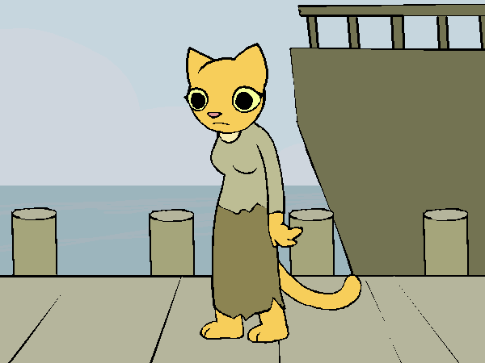
One month ago you made yourself a promise: you were going to turn your life around. You were going to get a real job, stay out of jail, and not get into any more trouble with cults. Nobody thought you could do it; they said your questionable reputation, lack of any useful skills, and flagrant alcoholism would always hold you down.
But you had a plan.
You were going to start over, far from home. You pawned off your belongings, withdrew the rest of your inheritance, and narrowly managed to buy your way onto a merchant ship bound for Cyrodiil.
And now you have arrived, alone and penniless in a foreign country. Rounding up to the nearest week, you’ve been sober for an entire seven days. This is your chance to be whatever you want to be. Whoever you want to be.
You think you’ll start with a new name. Something less ethnic, maybe suitably Imperial, to fit in in your new home.
(Click link below to continue)
N.. no… NO!
There is something far too… royal about that name. Something that strikes fear in your soul.
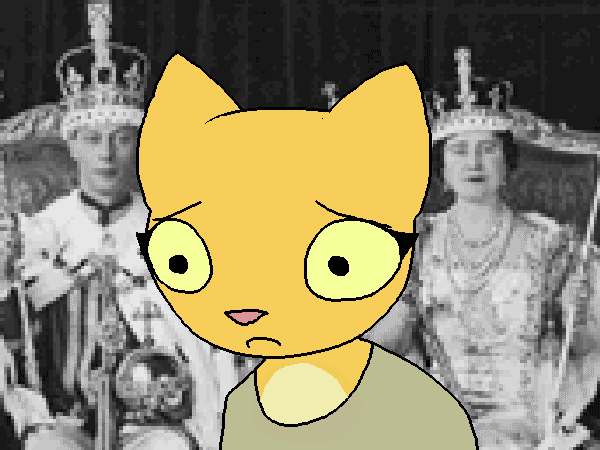
You’ve never understood why kings scare you. Maybe it’s those crowns – jagged rims glistening like a dozen metal teeth burst forth from their skull, a vestigial maw seeking to devour any so unfortunate to find themselves upon it. Maybe it’s their clothes – an ocean of sparkling purple silk dragged behind them like the vicious tendrils of an unholy carnivorous plant. Maybe it’s their very expression – the way it oozes that solemn, dutiful dedication to their country.
“Scare” might even be too weak a word. Dukes terrify you, as do Princes, Counts, and Barons. But Kings, Queens, Emperors… you don’t know what you’d do if you ever found yourself face-to-face with one. Probably curl up and cry.
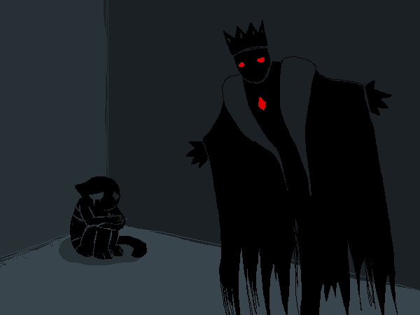
You used to have a recurring nightmare where you were trapped in a small, dark room with a King. There’s no way out. No one to help you. And he just stands there, being a king. Luckily, you’ve mostly taken care of your nightmare problem through heavy self-medication. Though you guess the self-medication became the bigger problem.
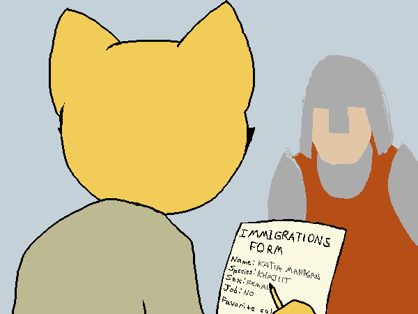
This name sounds pretty cool though. You like the way it rolls off your sandpapery tongue. You jot it down and hand the immigration form to the guard.
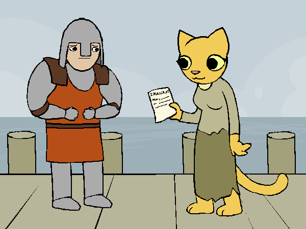
The guard says you can keep it if you want. They don’t actually keep track of immigration, and he only brought the form because you asked. He’s just going to throw it out.
You tell him you don’t care. This has symbolic value to you. It makes your new life feel official. He obliges and accepts the document.
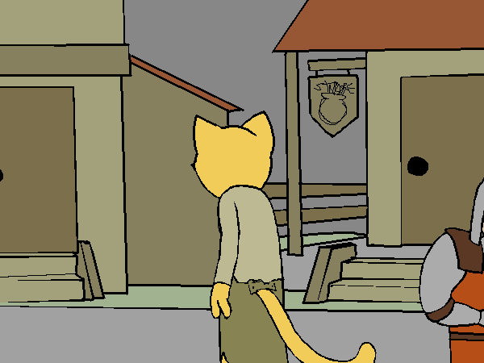
Not many people out here; everyone must be inside. Looks like there’s some shops near the dock. One appears to be a general store, the other some kind of restaurant.
Your… trade skills? You always get a little uncomfortable when the T-word pops into your head.
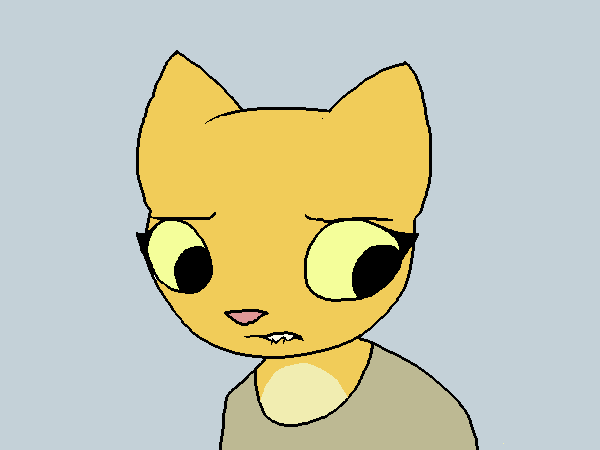
Suffice to say, your childhood was not full of encouragement, your adolescence was not full of employment, and your adulthood has not been full of success. Each one sort of led into the next, which is to say “nowhere”. It’s one of the things you’re hoping to fix in your new life. Someday, you’ll be good at something. Or even just adequate at it. It would make you so happy.
But for the time being you’re pretty much worthless. I mean, you know a pretty interesting party trick involving a yoyo and a pineapple, but… it’s not appropriate for most parties.
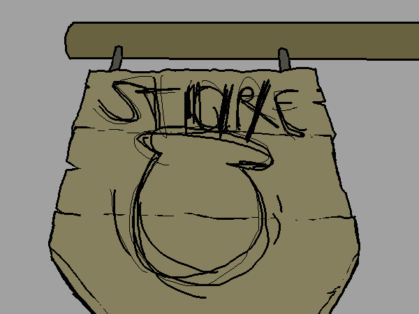
You think it’s supposed to be a bag of swords, but you’re not sure. It’s pretty much the worst sign you’ve ever seen. You can barely read it.
If you need some quick cash later maybe you can offer to redesign it.
Right now, however, your best bet for steady employment seems to be the restaurant. And hey, you’re Cyrodiillian now, may as well get to know the locals.
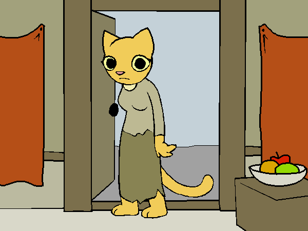
You head in. This place is pretty nice, you guess. Sort of homey.
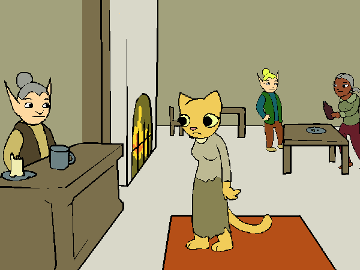
The proprietor is some kind of elf. There’s like a billion kinds of elves, you can never keep them straight. He welcomes you to The Flowing Bowl and asks if you would like to see a menu.
> ==>
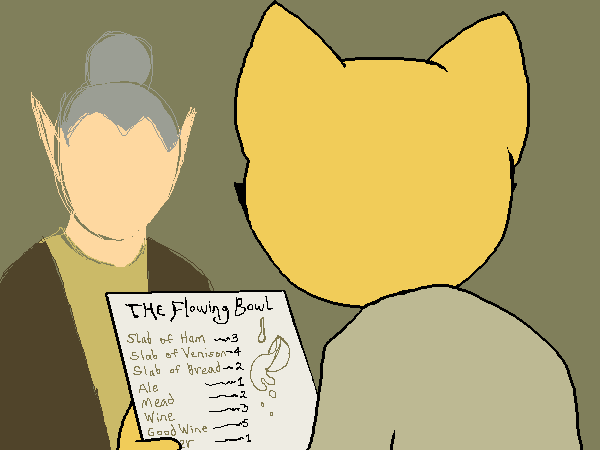
This is definitely a menu meant for sailors. You guess that’s what you have to expect at a port town. It’s all out of your price range, too – that is to say, nothing is free.
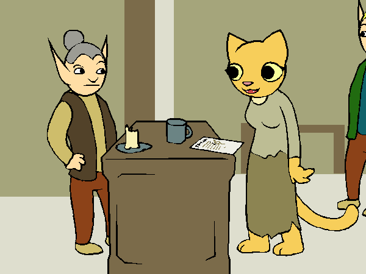
But you’re not going to let that bring your spirits down. You compliment the elf on his fine seaside establishment and alluring menu, then clumsily segue into how you are broke and looking for a job. Maybe he needs a maid to clean up at the end of the day, or a waitress to service tables? Or someone to do both for the wage of one?
Him and his brother manage to handle all the chores around here, he explains. There’s not really any need for a third employee, no matter how many jobs she was willing to take up and how little wage she was willing to accept. Between the two of them, there is more than enough manpower to keep the food cooked, sailors fed, the tables spotless.
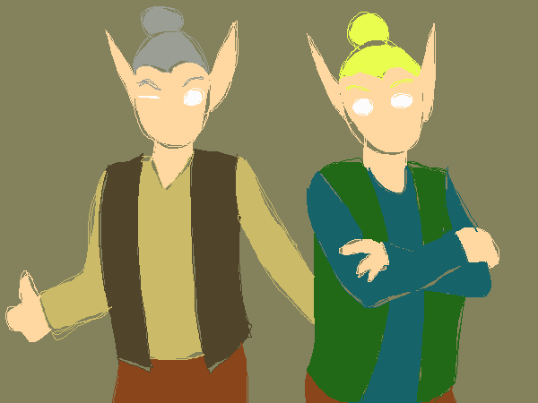
You have a sneaking suspicion they aren’t actually brothers.
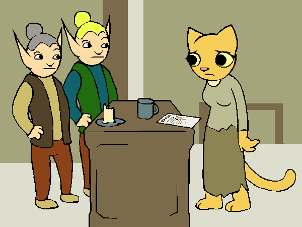
You’ve been in Cyrodiil for all of fifteen minutes and your ambitious dreams of starting anew are already feeling a bit shakier. You confess that you didn’t plan ahead very well and are in dire need of employment. Is there anyone in town who might need some menial labor? You’re willing to learn new skills. You’re scared and alone and just need a place to sleep and a way to put food on the table.
The gay elves explain that many trading ships come through this port. If you have any valuable possessions, you may be able to sell them for a good price. If you don’t have any valuable possessions… well, maybe someone else will need a maid or something. You could ask around.
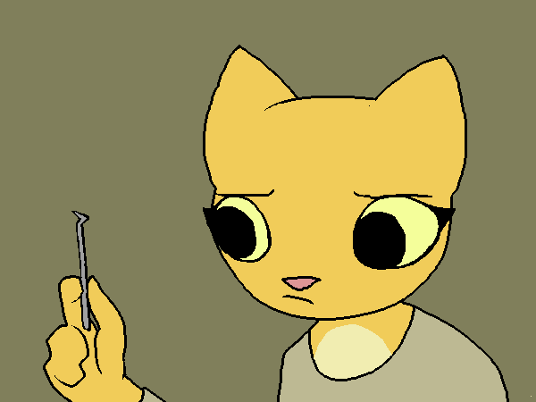
Your only possessions in the world right now are the clothes on your back and this lockpick you found on the floor of the ship. You have no idea how to use a lockpick.
> ==>
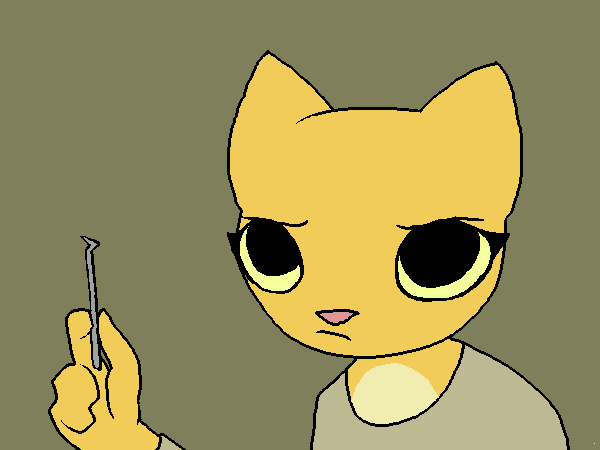
Excuse me but part of your plan was to stay out of jail this time.
And you don’t really think a tin cup is going to play a very pivotal role in what you hope will be your rags-to-riches story. Though admittedly it would effectively double your wealth.
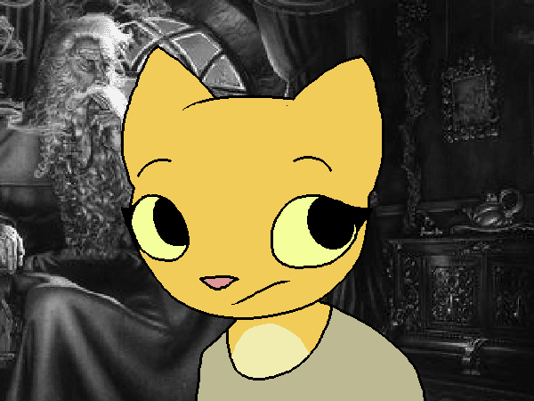
You can’t be a wizard.
Wizards have long flowy beards. You assume it is a prerequisite.
You ask the elves why they’re not at the emergency elf summit on elf island. Isn’t that where elfy elves have to go?
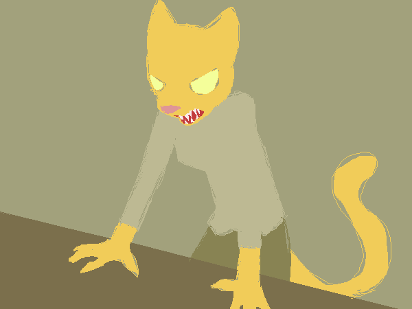
In retrospect your tone was probably a little too aggressive.
They retort that there’s a sale on Fancy Feast at the Imperial City. Shouldn’t you be headed off that way?
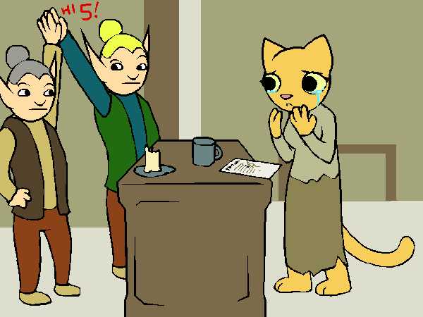
Cat jokes always cut you deep. That burn was so sick it lit the candle.
It’s made slightly worse by the fact that you really would like some (cat)food.
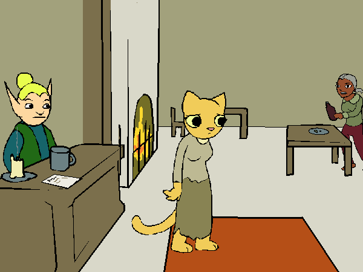
These gay elves are racist fucks and you don’t want to talk to them anymore. Maybe you’ll go check around for a bulletin board offering jobs, or ask that store owner if you can redesign his sign. You could try to sell your clothes, but that would just leave you with no pockets to hold your money and lockpick, and you’d probably get arrested for public indecency anyway. Or maybe you can forget about the whole “keep a good reputation” thing and go find a party where you can do your pineapple tri- oh hey that lady with the bottle is yelling something incoherent at you. Maybe you should reply, or just walk away very quickly.
Your special day can’t get any worse, you figure. Time to do something stupid.
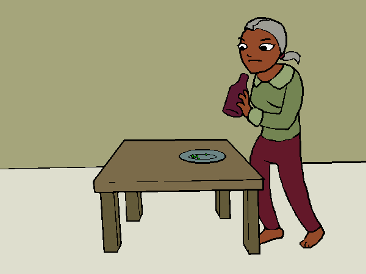
You cautiously approach the crazy bottle lady.
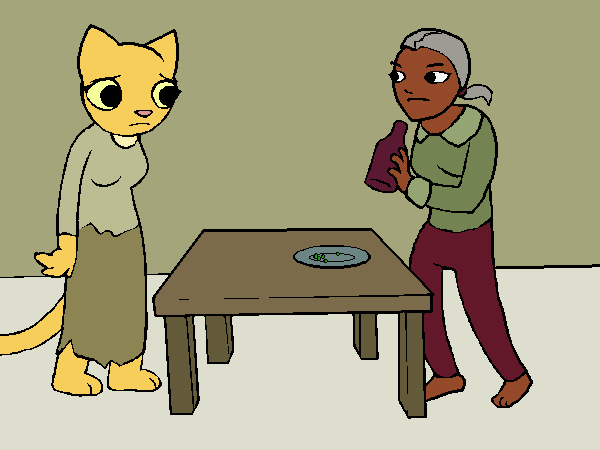
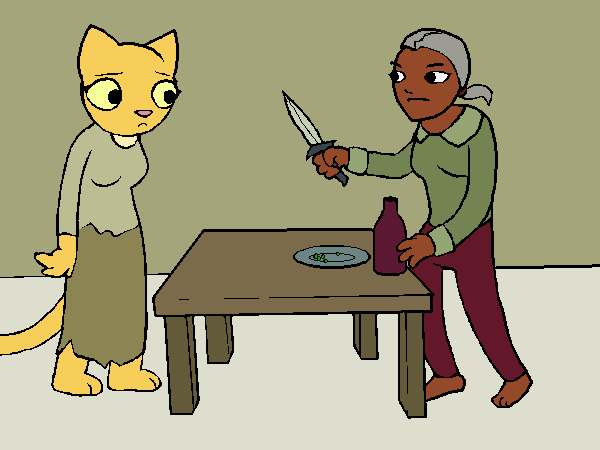
She heard you were new in town. Yes, you reply. That’s cool, she says. She was new once too. She didn’t really know what to do with her life. Then she met some nice people in robes who gave her food and a place to stay and something to believe in but she’s not supposed to tell you about them. That’s okay, you say, you don’t want to know. She appreciates your non-prying-ness and declares you to be her best friend.
She takes another swig and goes off on a tangent about how she left the peas on her plate because peas are the worst fruit. She’s not even entirely sure they are a fruit. She says you can have them if you want, but you say you’re not hungry. You also point out she is still waving a knife at you. She apologizes, sometimes she just knifes people.
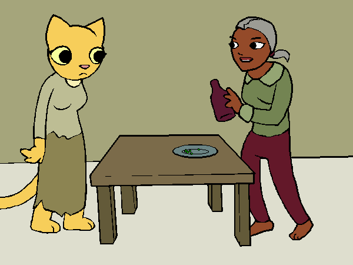
You look thirsty, she says. You should have some of this awesome wine. In fact, you have to have some, it’s just that good. You nervously try to explain that you are a recovering alcoholic and have the booze tolerance of an anorexic six-year-old, but your new friend insists you are just pussying out. Pussy pussy pussy. She asks again if you would like a drink.
Frankly, you would love a drink right now. Also she has a knife.
> ==>
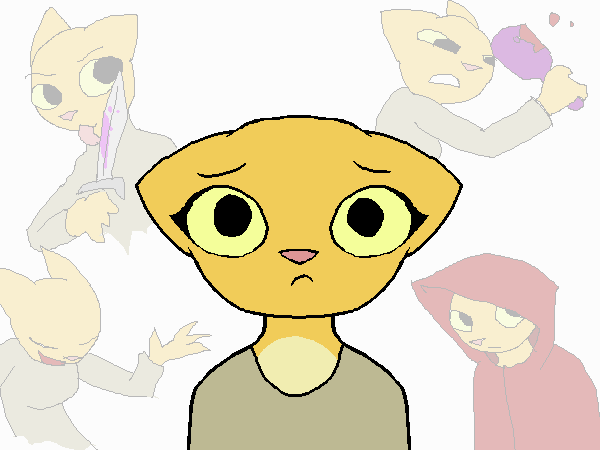
Your mind is filled with cunning plans and heroic maneuvers. A brave person wouldn’t be afraid to stand her ground. A skilled person would find a way to turn this situation to her advantage.
Unfortunately, you are neither of these things.
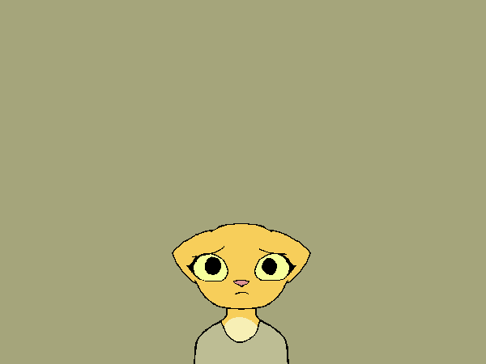
You abscond the fuck outta there and find a place to hide.
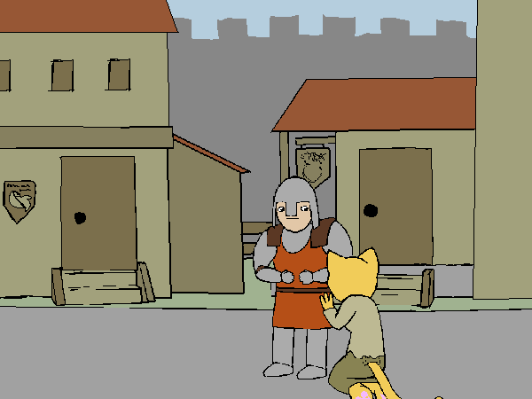
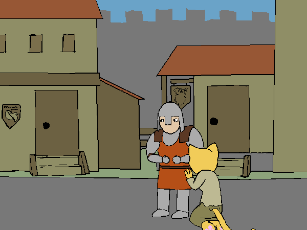
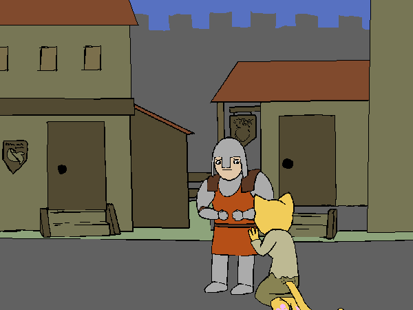
Okay, you’re pretty sure she’s not following you.
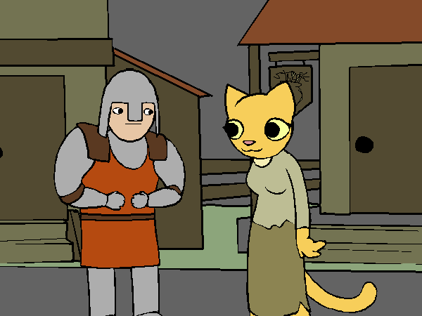
After spending the last several hours cowering behind the guard, you decide that this is an opportune moment to inquire as to whether you can join the city watch. You explain that you don’t have any experience and have never held a weapon in your life but you have a willingness to learn new things and will work very hard. One day, you say, you will be the best guard. What do you think?
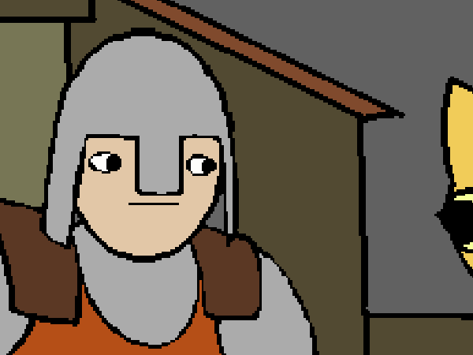
The guard looks at you with a troubled, uncomfortable glare, like that of a man who must explain to his paraplegic daughter that her dreams of becoming a ballerina will never come true. He struggles to find the softest words, some gentle way to let you know that you’re not exactly what they want in a guard. You’re scrawny and unintimidating; nobody would ever say “hey, you should consider joining the guard”. They just don’t need you.
Your astute senses pick up on his internal struggle. It is time to up the ante.
Maybe you could be a guard, he says. Usually guards are tough and brave but sometimes there are exceptions, perhaps? If you work hard enough you can accomplish your dreams, whatever they are.
He doesn’t have the authority to accept you into the guard, though. You’ll have to go to the castle and speak to the Countess.
Suddenly becoming a guard doesn’t sound like such a great idea.
You don’t really want to invite any cat jokes. You don’t know if your fragile ego can take it right now. May as well check out that store, though.
You enter the store with the terrible sign.
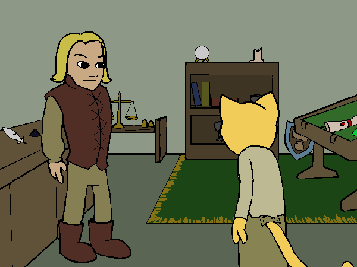
The owner welcomes you to Lelles’ Quality Merchandise. He invites you to look around, and offers to answer any questions you might have.
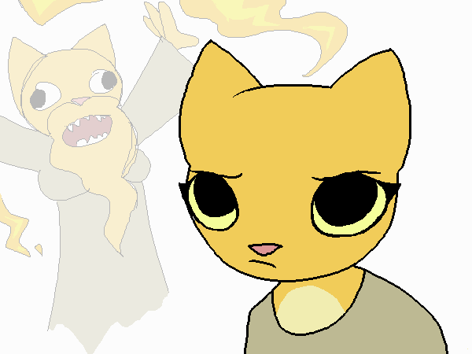
We’ve been through this already. You have no wizard beard! You don’t think it’s biologically possible for you to grow one either, at least without magic. It’s a catch-22.
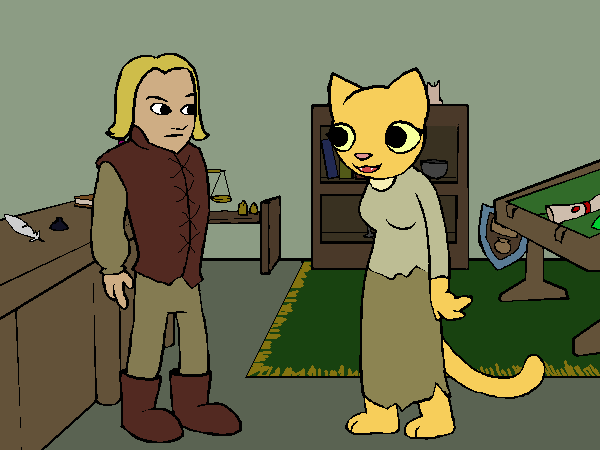
You excitedly say hello to the nice man and explain that you have no money. But you wish you did, because his store is very nice and appears well-stocked! It is probably a lot of work running this store all by himself and you would be happy to help if he needed it. Did you mention you are broke? Sorry if you already mentioned that.
Also it is a shame his wonderful store lacks an adequate sign to match.
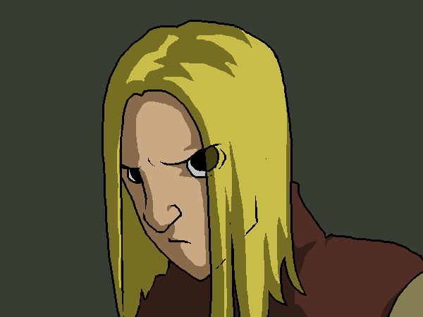
What.
Is wrong with my sign?
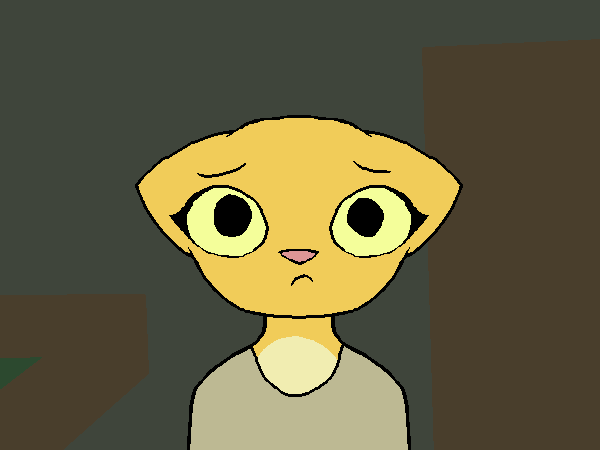
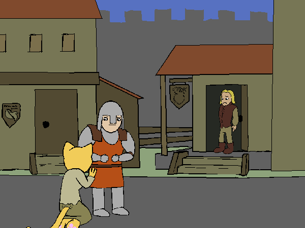
Lelles says he was just joking. He didn’t mean to scare you. Please come back.
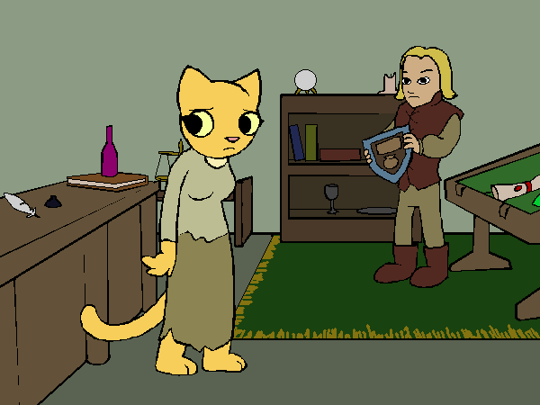
He knows his sign is not very good, he tells you. He’s been planning to replace it, and even bought a new blank sign. However, he doesn’t want to ruin this expensive new sign with his abysmal handwriting. He’s been hoping to run into someone who was willing to help out.
This is exciting! You should be excited. But your eyes are stuck on that damn bottle he left out in the open.
Your mouth feels dry. You really want some alcohol.
Penmanship?
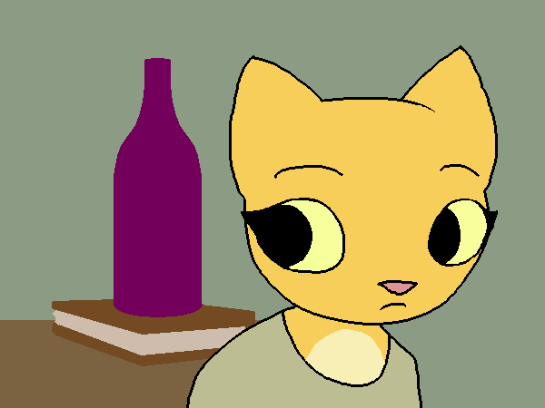
You’re the best fucking pen in Cyrodiil.
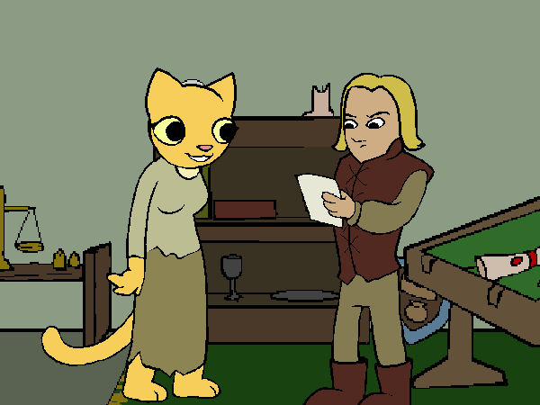
Lelles admires the legibility of your handwriting, though he actually needs the sign engraved and he thinks the flowers and smiling heart might not be reaching the store’s target audience. Maybe you could just carve “Lelles’ Quality Merchandise” in fancy letters? He’ll give you maybe ten Septims if you do a good job. That should be enough to get you a good meal and a night at an inn.
You accept.
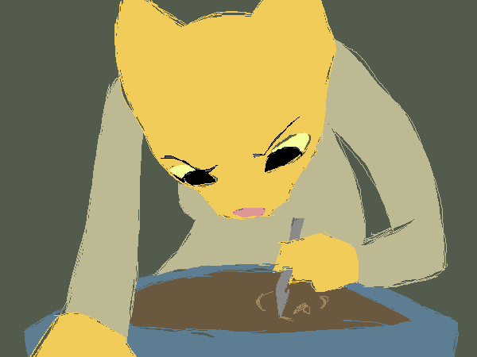
You spend the following hours toiling away on the wooden sign using Lelles’ tools. You know this has to be your best work. This little sign will be the first thing you are known for. This is your first step in the right direction. You put your heart into every letter, polishing every curve and serif to perfection. Once your engraving reaches the pinnacle of artistic quality, you carefully dab a fine coat of white paint onto every character. It is beautiful.
By the end, your arm is cramped and your eyes are strained. But you don’t care, you’ve made something good and are going to reap the benefits. Time to show Lelles.
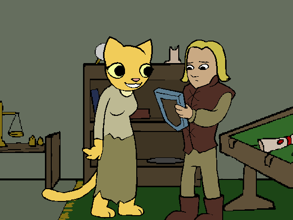
He comments that your handwriting is good but you misspelled “merchandise”.
> ==>
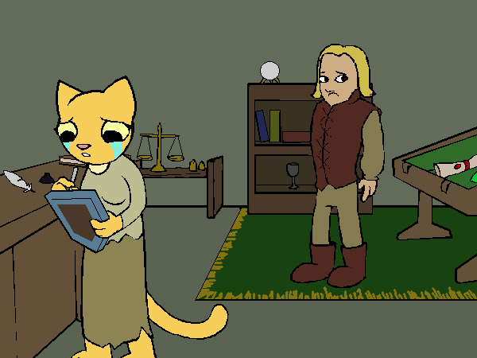
Wait, you say, maybe you can fix it. It’s still much better than the original sign so maybe people won’t care about this one little mistake that you shouldn’t have made and oh gods it looks so stupid why did you do this you’re just making it worse. Now even people who don’t know how to spell will know you made a mistake.
Your tears fail to magically fix the sign.
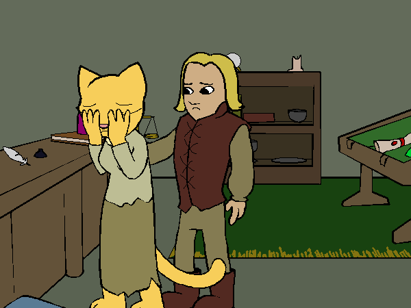
It’s okay, Lelles tells you. You tried your best. Your “best” just happened to be slightly worse than everyone else’s “average”. He figures he can still use the sign, though people might think he’s kind of dumb because of it. You say you’re sorry, sorry sorry sorry, and ask if there is anything else you can do at all to make it up to him. He says no, he thinks you’ve done enough. You should go now. But you do deserve some compensation for your hard work.
You’ll happily accept less than ten, you say. Maybe eight Septims?
Oh shit no, lady. Lelles got a business to run here, and Lelles all about quality. He’ll give you one.
Whatever.
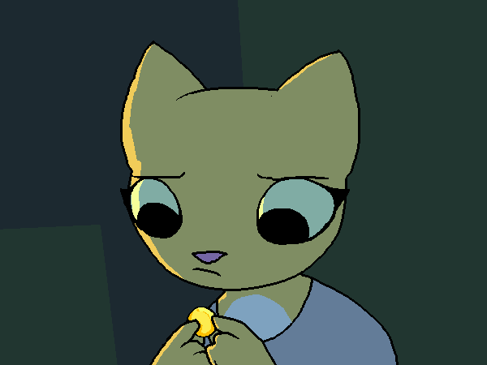
You take your payment and leave. It’s cold and dark outside.
Maybe one Septim is all you are worth. Maybe everyone was right after all. You thought maybe if you went far away, you could leave it all behind and make something of yourself. You tried as hard as you could, and have a single coin to show for it. Lelles was right; your best just isn’t good enough.
You feel terrible. All you can think about is how wrong you were. How you ruined everything.
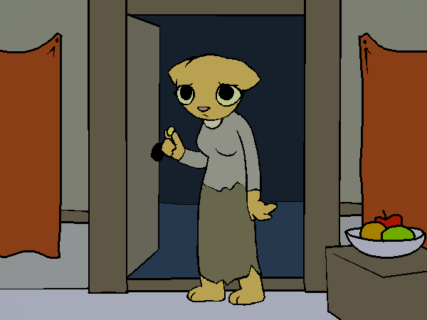
You head back to The Flowing Bowl. There is exactly one thing you can afford right now, and you need it badly.
> ==>
Because lets face it you’re a massive failure so you might as well start stealing from successful people. |
good ofc so that you can pickpocket him while he isn’t looking |
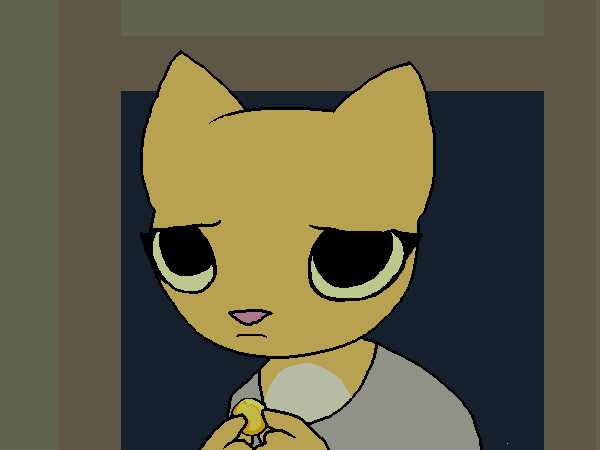
You are in no mood for heroics. It’s been a terrible day, and right now all you want to do is bring some little spark of happiness into your otherwise bleak life.
You appreciate the encouragement and promise your next Septim will be toward something productive, but now just isn’t the best time. You’re sorry.
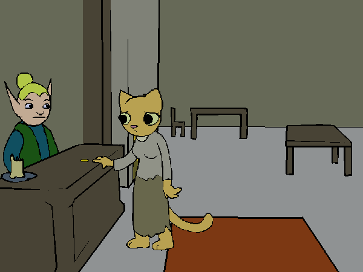
You give the elf your coin and ask for whatever alcoholic drink that can buy. You ask him to water it down a bit, please. You don’t want to get wasted, you just want to drink enough to forget what a failure you are.
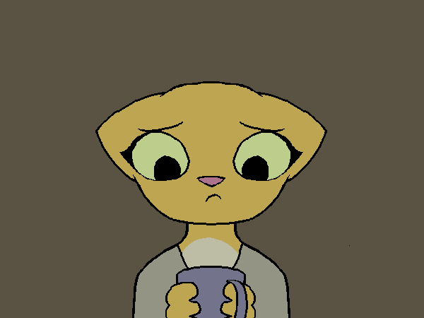
You are apprehensive to succumb to your addiction, but you know you’ll feel better afterwards. That’s what matters right now. Maybe tomorrow will be better, if you can renew your spirit.
Maybe if you can bring back that feeling that you can do anything, then quitting again will just be another simple challenge to surmount. Then things will be better. You’ll make sure things are better next time.
You’re sorry.
Bottoms up, you guess.
You fucked up.
Well, he has a tramp stamp but you’ll need to find a mirror if you want to check yourself. I mean, maybe he already had that one when you met him.
You have no idea where your clothes are. But this appears to be a fishbowl full of peas. Evidently the fish couldn’t breathe peas. They truly are the worst fruit.
You consider riding the unicorn, but to be honest you’d be kind of embarrassed to be seen on it. Are those flames on the side? You are pretty curious what it’s doing here, though.
That sword isn’t coming out. You might be able to pull the arrows out, though, but without your clothes you don’t really have anywhere to… sec
Okay, you still have your lockpick. That’s good you guess.
You think it’s time to skip town and start over again over again.
It’s purple paint, yeah.
It looks like you tried to write a book last night. You can’t really bring yourself to read past the first page.
The orc is breathing. That’s a good sign. You peek under the bed.
Is that… a pineapple and a yoyo? Oh gods, it is. So much for a good reputation.
You attempt to tailor the bedsheet into clothing, receiving an unpleasant reminder that you have no trade skills. You really should find some clothes though, before someone shows up.
It’s not a ladder! It’s a chair nailed upside down to the ceiling. It’s stuck there pretty well too. You think that’s all there is to say on the matter.
The only way out of this room is the door. Well, or the second-story window lined with broken glass.
You’re a little bit afraid to wake up the orc! I mean, you know nothing about him besides the fact that he’s twice your size and apparently threw a sword through the wall. And that he has a tattoo.
You nab those arrows though.
You check the dresser. Just your luck; empty except for a folded piece of paper you can barely read.
Oh! Right! You almost forgot you could do that.
You switch on your darkvision.
You take the AAAH WAIT you forgot to turn off your darkvision.
Okay. Wow. You take the book, and slip a shard of broken window in there for good measure. You don’t know what kind of horrible secrets you wrote in that book. If it’s anything too dark you might have to stab yourself for reading it.
Hey, that is pretty cool. Maybe things are finally turning around. You just woke up in a strange place with a strange man and you haven’t cried once.
I mean, the blood doesn’t count. That was a legitimate mistake on your part.
Yeah, your clothworking experiments haven’t been turning out well.
You peek out into the hallway.
BEST IDEA.
Wait no this idea was retarded, why did you do this. You should’ve just wrapped that tapestry around yourself. You hope this paint is washable.
You hear a door being unlocked downstairs.
> ==>
> Paint some pants and turn that bra into a shirt |
Hey, thanks! But you don’t really have enough paint left to do anything more, and really don’t want to invite “catsuit” jokes.
Doable, except the strapless part.
You hear a door opening downstairs.
Someone is coming in. You figure worst case scenario, in your drunken state you inadvertently sought employment as a prostitute. Maybe this is the brothel proprietor returning?-
-Whoops, or not. This woman has some very valid questions about what you’re doing in her house.
> ==>
I am 70% sure that bows don’t work very well at close range! |
Yes… you should be able to use the book to swat her bow out of the way and maybe deflect the arrow if she releases. Then you can threaten her with the shard of glass before she draws another oh gods who are you kidding she has a WEAPON.
Between panicked sobs you attempt to explain that you have no idea how you got here. You had a little bit of ale at the docks and the next thing you know you woke up naked upstairs in bed with an orc you’ve never met and you think you really made a mess of her room and you’re sorry but please don’t kill me. If that orc was her husband you’re also sorry but you admire her progressive thinking on interspecies marriage and also you have very nice scales and please don’t hurt me I’ll do anything.
Woah woah woah she cuts you off.
It’s okay.
She just wanted to make sure you weren’t robbing the place, and she isn’t married to an orc. She admits she feels partially responsible for your predicament, since she was the one who got you that pineapple last night. And it was all pretty much downhill from there, once you did that thing with the yoyo and pineapple. In the town square. In fact, you probably shouldn’t show your face around town for a little while. You’re kind of a big conversation topic right now.
But it’s okay. People won’t remember it forever. In her line of work, she explains, she knows firsthand how quickly you can be forgotten. How did you end up in this town anyway?
You tell her your story, about how you came to Cyrodiil yesterday without any money, thinking you could make friends and get a job and start over from the ground up. But you just messed up everything you tried and at the end of the day you felt so awful that you started drinking again. You’re really sorry and will do whatever you can to pay for the room you trashed.
That’s good, she says. She was already planning to ask if you’d pay for anything you broke. Now, what trade skills do you have and how much damage did you do to the room?
You nervously sidestep the topic and attempt to do introductions instead. Hi I’m Katia Managan, what’s your name and what do you do I guess. Sorry.
Oh gods, awkward silence. You should’ve jus-
She introduces herself as Quill-Weave. She’s a novelist, and mostly writes stories about the gritty, merciless struggles of the lower classes. She admits that might be why she finds you interesting; you have basically introduced her to a whole new level of lower-class. You thank her, but aren’t really sure if it was a compliment.
You go ahead and explain that her room is pretty much totaled. There’s paint all over the place, several punctures through her wall, a broken window, a shredded bedsheet, a defaced book, and a pimped-out unicorn prowling around. You also apparently killed her fish. She tells you not to worry about the fish, though. She actually hates all pets, and only gets them to watch them die. She says it’s a writer thing, you wouldn’t understand.
You tell her that you’re willing to do whatever you can to make the damages up to her. Maybe you could clean up? You’re also okay at painting, maybe that could come in handy? She subtly implies that she isn’t ready to trust you with paint, but says she may have something you can help with…
She’s leaving tonight to do some research for her next book, but needs this letter delivered to the nearby city of Kvatch as soon as possible. All you’d have to do is travel to Kvatch, deliver the letter to the local bookstore, and then return with the reply. While you’re there, you could pick up a new copy of the book you defaced.
She’ll give you money for the new book, as well as enough for you to spend the night at Kvatch before you head back. She’s willing to trust you with the money, since she needs this letter delivered quickly and she’s found no one else available.
At most, it would take two days round-trip. She is confident that absolutely nothing could possibly go wrong.
You are ecstatic. You promise you won’t let her down and that you will be the best and swiftest letter-deliverer Cyrodiil has ever encountered. Quill-Weave uncomfortably chokes out that first she’s going to go buy some clothes for you and your orc friend. What do you usually like?
You ask her what she means.
She wants to know what kind of clothes you like to wear. She wants to help you get back on the right foot – that is to say, properly fed and clothed – and she has never actually seen you when you weren’t naked. Maybe you could just, like, draw how you like to dress? She could try to find something close to it.
This is the first time in your entire life anyone has ever asked what you like. Regarding anything. You have never thought about it before.
> ==>
You have the best idea. There’s going to be armor and jingly bells and rocket boots that shoot lightning and a fake beard and wait this is stupid and unrealistic. You start over.
How’s this, on the right?
Quill-Weave says she should have no problem finding something just like that, since this is a seaside town. She also throws in a nice compliment about your drawing skills, which brightens your mood a bit.
She’s been meaning to buy some new outfits for herself anyway so she’ll be back in an hour or so. She’ll answer any more questions you have when she gets back; until then feel free to help yourself to whatever’s in her kitche-
Hello ladies.
Has anyone seen a pair of red trousers?
Quill-Weave quickly says something about how she’s confident you two can work this out on your own okay see you later.
> ==>
Hey Honeybuns, how’s it hanging? It’s always hanging amazing. That’s the answer.
The orc introduces himself as Gharug gro-Upp. He overheard you talking to that fine piece of scale; sounds like she’s not too happy about the room! But that’s okay, he’ll pitch in. He always keeps some coins lodged between his luscious, steely pecs in case something like this happens. Check it:
KABOOM!
Pretty fucking amazing, right?
He explains that he knows a guy in Kvatch who can get this lady’s walls and windows fixed on the cheap. Just take this gold up to Kvatch and find someone named Fixes-Homes. He’ll get this place back how it should be. Gharug says the gold he was packing between his massive, toned chest muscles should be just enough to cover the repairs.
You uneasily thank Gharug for his contribution. You ask him if he’ll be joining you on your trip to Kvatch, but he declines. He’s got to get his leave on, if you know what he’s saying. (He’s saying he has to leave.)
Take care, Butterscotch, and thanks for the sweet lay.
Before you can say anything else or mention Quill-Weave is out buying clothes, Gharug gets his leave on.
You’re not entirely sure how to feel about this.
> ==>
Okay, you guess he’s not the weirdest thing you’ve had drunken sex with. You’ve done worse, yeah.
This isn’t making you feel any better about yourself.
It’s not a blanket, it’s a tapestry! The difference, as you understand it, is about ten gold.
Regardless, you gather up your money, book, tapestry, arrows, glass shard, and lockpick and check out the kitchen. This stuff you’re lugging around is getting rather cumbersome, you should probably ditch some of it or find a better way to carry it.
> ==>
Look, it’s not important, okay? You made mistakes, you know that. That was the old you. You’re trying to leave that behind so you can focus on more productive things.
Like this nifty hobo bindle you just made!
It turned out way better than your Fruity Tote. That was a pretty terrible idea.
As an added bonus, one of Quill-Weave’s brooms has been turned into a much more serviceable scrub brush.
Alas, these poor flowers appear to be another tragic victim of Quill-Weave’s inadequate pet care. Any water that was once in this vase has long since evaporated, leaving the innocent plants to die of thirst. There was no way for them to escape their fate, but at least until the very end they had eachother.
You hope they find their way to flower heaven.
They’ll receive a proper cremation next time she lights her fireplace.
Sounds like a plan.
The other door is stuck. Maybe something sticky spilled over there? You grope around the other side a bit but it just feels like some more bottles.
> ==>
Yeah, you’ve probably taken enough of Quill-Weave’s stuff. You already owe her a lot, both figuratively and literally. It’d be rude to keep taking advantage of her hospitality. Anyway, that bottle is making you think things you don’t want to think about.
You clear your mind by cleaning up that mess you made with the watermelon. It’s too bad your idea to hollow it out and turn it into a Fruity Tote didn’t work out. That would’ve been pretty neat.
Wait, you hear the front door.
You welcome Quill-Weave back and tell her that the orc already left, nude. You both agree that was pretty weird of him; maybe it’s some orc thing you don’t understand. You also mention that you used her tapestry to make a bag to carry some supplies, you hope she doesn’t mind? She says it’s fine. It’s not even a real tapestry, it’s actually just a blanket she hung up like one.
Here’s some clothes. She hopes they’re close enough to what y-
Huh. You got those on fast. Laces and everything.
You explain that you’ve always been remarkably quick at getting in and out of clothing. Some people would consider this a skill, but for you it’s always been more of a liability. She understands. Anyway, you can’t imagine this ability ever having any practical applications, ever.
Now that you’re fed and decent, here’s the letter, 25 Septims, and a map of Cyrodiil. You just need to head northeast along the Gold Road until you get to Kvatch, take this letter to the proprietor of the bookstore, and wait for his response. In that same store you’ll be able to get a new copy of the book you ruined; it should be about ten Septims, leaving you fifteen for food and lodging.
You mention that you’ve heard some bad stories about travelling alone. The trip won’t be… dangerous, will it?
She says as long as you stick to the main roads you should be fine. Imperial Legion soldiers patrol the roads on horseback and are stationed at most inns; they’ll help you if you feel like you’re in danger. If you run into any trouble, just keep moving as fast as you can until you find a soldier. But if something goes really wrong… here-
It’s a potion of invisibility. Chug it and run. These aren’t cheap, and she’ll expect you to pay for it if you use it, so don’t drink it unless you have to.
You thank her, but admit you were expecting, like, a weapon. Something to defend yourself with, if you had to.
She reminds you that these are bandits and monsters you’re talking about, not balls of yarn. What do you think you can do?
Quill-Weave uncomfortably apologizes for the cat burn. She didn’t know those upset you.
You pack away the invisibility potion in the safest part of your bag and very, very, very carefully leave Quill-Weave’s house. You can’t imagine how you’d feel if you broke something expensive due to your own clumsiness.
Before you leave, of course, you have a couple more questions.
Most importantly, you check that the City Guard isn’t after you or anything. I mean, you evidently made quite a scene.
Quill-Weave says not to worry about it. You technically broke a few laws, yeah, but even the guards were all really impressed by what you did. Nobody thought it was physically… possible. The Countess might’ve had something to say about it, but you ran away as soon as she showed up.
You probably did more damage to your reputation than your legal standing, but you shouldn’t worry about that too much. There’s another female Khajiit who lives in this town, and people keep thinking it was her that pulled the pineapple stunt last night. You guys do look pretty similar. You say that you hope you didn’t hurt the Khajiit’s reputation too badly with this, but Quill-Weave says not to worry about it. This girl’s creative, she’ll find a way to turn it to her advantage.
Well, time to get a move on you guess. You profusely thank Quill-Weave for all her help and promise you’ll be back as soon as you can with a response from the bookstore owner and a shiny new book in hand. You decide not to tell her about Gharug’s money – that way you can surprise her, and she won’t be disappointed if something goes wrong.
You consider hugging her, but decide against it. She probably doesn’t want to touch you. Actually you’re just too embarrassed because you’ve never hugged anyone before, but you tell yourself it’s because she wouldn’t want to touch you.
Off you go.
You slink out of town as discreetly as possible. Before you, the Gold Road stretches into the distance across the hilly countryside. You have a long journey ahead of you. But you also have a full stomach, clothes on your back, a good pair of shoes, and someone counting on you. You can do this, you tell yourself. This is the (for real) beginning of your new life in Cyrodiil.
You are Katia Fucking Managan, and you are going to Kvatch!
You have no idea what an adventurer poses like but try anyway.
… maybe you’ll try again later.
> ==>
But yeah. On to adventure Katia! Have fun with it if you can. |
Okay okay, you get it. You look like a cat. That doesn’t mean your idea of a heroic tune is humming along with a catfood jingle. That’s just racist.
You would like some music on the trip though, so you sing along with the first tune that comes to your head. You’re just kind of making it up as you go along, but it feels fitting.
Milestone one!
You hope Kvatch isn’t much further, your legs are getting tired.
You walk on for a while.
Pick flowers? You guess wizards or whatever are always mixing up magic potions using flowers and stuff. Maybe if you found some rare plant you could sell it back at town.
You don’t really have any idea what is a useful potion ingredient and what is just a weed, though.
(Music credit: Nerevar Rising, from Morrowind.
With vocal accompanimewnt by cynicalCanasian.)
If four leaf clovers aren’t magic, you don’t know WHAT is!
Don’t forget mushroom soup, too! Mmm.
The mushrooms prove kind of a hassle to pick, though, since they have these three-leafed things tangled all around their stems.
You come to the obvious realization about the vines. Fuck.
It’s just poison ivy, though. It’s not, like, real poison. Maybe you can find a stream and wash it off.
Either way, you don’t need any more setbacks on your way to Kvatch. These mushrooms and totally-magical clover you found should give you a little bit of extra spending money, but you still want to make it to the city before nightfall. You throw your plants in your bag and continue along the road.
Hours pass. You encounter absolutely no water sources. Not only is this poison ivy starting to act up, but you’re getting kind of thirsty. According to the map, you’ve still got a ways to go until you reach Kvatch.
Suddenly, a familiar voice calls after you.
> ==>
Huh, that… actually makes a lot of sense.
You’re a little disappointed; you kind of liked to think this thing was increasing your luck by some minuscule-yet-significant amount. I mean, at least until you sold it. But who would want a dumb mutant clover that doesn’t do anything special?
Greet him politely and make sure you didn’t read the map wrong and are headed in the wrong direction. |
Hey Cornmuffin, fancy seeing you out here on this fine piece of trail.
You politely greet Gharug back. You’re on the road to Kvatch, right? You thought he had somewhere else to be.
He explains that earlier today he learned he had to head toward Kvatch for a business trip. It turned out there was an important meeting he had to get to, to follow through on one of his many amazing investments. It sounds as though his business is going to be very successful.
Oh, I’m a professional highwayman.
Gharug says he’ll need that five gold back, along with anything the lizard-lass gave you. He’s got to get his rob on, if you know what he’s saying.
(He’s saying he’s robbing you)
> ==>
Then, quickly reach for the potion and drink it while he is distracted. |
Okay but you’re KIND OF flipping out here. This guy is waving a fucking SWORD in your face and acting like you’re supposed to be all calm and businesswomanly about this and to make matters worse you’re about to try to outsmart him or something.
You tell him okay, you are reaching into your bag to get the money. The money that you’re going to give to him. You put on your best kitten-eyes, trying to either distract him from your potion or make him feel sympathy. Heck, you’re kind of hoping for about any effect at all here.
Gharug doesn’t seem all that fazed by it. What’s that sticking out of your bag? Is that a potion of invisibility? Those are expensive. They also make you so hard to see.
Luckily, he always keeps a magic scroll of Detect Life packed between his angular, rock-hard abs. Do you know how handy this is when someone tries to hide? It’s incredibly handy. That’s the answer.
So let’s not start bringing our magic crap into this, Apricot.
You don’t exactly operate well under pressure. In a spur-of-the-moment decision, you try to execute every fallback plan at once.
Suffice to say, none of them are very effective.
Gharug is getting tired of this though. He has other meetings to get to. He tells you to get down on the ground or else he’ll just lop your head off and call it a day.
> ==>
Kat: Get your feral on. (I mean flip the fuck out with the claws and the biting) Or if that fails, ask if you can at least keep that letter you were supposed to deliver. |
Your mind is filled with cunning plans and heroic maneuvers. You know there has to be some way to get out of this with your life intact. Maybe you could run or hide or trick him or fight him or… or..
You’re not a hero. You’re just a scared, friendless nobody who doesn’t want to bleed to death on the side of a road. You’re being threatened by someone twice your size who, last night, threw a sword into a wall so hard you couldn’t get it back out.
You’re sorry, you just can’t do this.
Gharug commends your choice. If everyone was as smart as you, he would almost never have to get his kill on. He proceeds to rifle through your belongings for anything of value.
You ask him why he even gave you the money if he was just going to take it back. Experience has taught him that this is a lot easier if victims trust him on their second encounter. And it worked well this time: he got at least a 600% return on his initial investment! He’s kind of a stickler for bookkeeping, he explains; he’ll even write you a receipt if you want.
After a few minutes, his assessment of your inventory is complete. At your request, he leaves the letter and book. You consider spinning an elaborate tale about how the book is actually a secret treasure map only you know how to translate, but it has your map, lockpick, and glass shard inside and you don’t really want him to find out about them. At this point, you’re cutting your losses and trying to keep whatever you can.
Gharug notices something else beneath the blanket. What’s this?
Four leaf clover!!!
It’s his lucky day. Moreso than usual, even.
Anyway, pleasure conducting business with you, Sweetcakes. This gap in the patrol doesn’t last all day, though, so he’s got to get his flee on, if you know what he’s saying. He’s saying he’s leaving. Take care, and good luck earning some more money.
And as fast as he showed up, Gharug is gone.
You feel awful. While you are glad you survived, a nagging voice in the back of your head insists that maybe you could’ve ran. Maybe you could’ve taken him in a fight. Maybe if you weren’t such a worthless coward who can’t do anything right, none of this would’ve happened. Why didn’t you tell Quill-Weave about Gharug’s money? She would’ve known Fixes-Homes is a stupid fake name. You’re an idiot. Your life’s probably not even worth the 30 septims you just lost.
And to make matters worse, that clover is totally going to make Gharug find more clovers or something until he has all the luck.
You’re right.
The best thing you can do right now is just keep pressing forward. If nothing else, you’ll be able to say that you at least tried. You still have Quill-Weave’s letter, so you can at least do that for her. You’re going to give this your all, even if it means finding out your all is not that much. You promise.
You pack the letter safely away in the book and tuck the book back into your bag.
Do we really need to go through this again?
Frankly, you’d love to know how to do magic stuff. You’ve never told this to anyone, but you actually think wizards are about the coolest thing ever. It’s not just the sparkles and fireballs, it’s that whole idea of making something happen with their mind. They want something to happen and it just does. That never happens for you, ever. It’s like the more you want something, the less likely it is to happen.
And sometimes that makes you really sad.
This receipt is incredibly silly.
You take it along anyway. Maybe you’ll be able to get a tax rebate or something. I mean, if you ever have an income.
You keep telling yourself that, but deep down you know it’s not true. You thought you’d have a chance to earn money in the last town, and look how that turned out: you just kept screwing up. Today looks like it’s headed along that same path.
Anyway, nobody wants your help. You’re not good at anything – at least anything people care about. You try not to think about it too hard, but you know Quill-Weave just gave you this job out of pity.
God you sound mopey. Time to shut off the Feelings Tap and focus on the task at hand. You’re still pretty thirsty and a ways from Kvatch, so it’d be nice if you could find a well or something. Or a discarded bottle of booze. That would be really nice too.
Hell, or you could find a pile of discarded money. That would solve problems.
There’s some stuff over there, a little ways off the road.
> ==>
KATIA IS SO CONFLICTED.
Democracy isn’t working here. Time to look at the arguments for and against and see which can personally appeal to you more.
> ==>
Exactly how many times are you going to have to explain this?
And woah, hey, that’s just mean.
Let’s get down to business though.
Delivering the letter, and promptly getting the response back to Quill-Weave. The best course of action to complete that task: |
You’re right.
There’s no telling what kind of danger lies among those ruins. Sure, you may find something of value, but you may also get eviscerated by a monster. You’re not an experienced traveler; should danger arise, you have no experience in defending yourself. If you ran into trouble, it would be big trouble. You were told it was safest to stay on the path.
You’ve had setbacks, sure, but you still have Quill-Weave’s letter. You lost her potion and you lost her money, but you can still deliver this letter and return with the response. You may have to sleep on the cold streets of Kvatch, but you can do it.
You understand that.
You know you’re not going to advance much from doing this, but it will be a small start. It will be one person you haven’t completely failed.
And you know that she’ll still be disappointed in you. She gave you a simple job out of pity, and you’re going to come back in more debt than when you left. When you kept Gharug’s money a secret, you were hoping you could surprise her. Show her that not only could you do everything she asked, but you could do more. You could be something special. Someone special, who goes above and beyond. But now it’s just like Lelles’ said: your “best” is slightly worse than everyone else’s “average”. And it hurts, trudging through the job knowing that your only goal is to minimize the inevitable disappointment.
Maybe you’ll have some opportunities to get money in Kvatch. More of the same: jobs you don’t have the skills to accomplish, given to you by people who know you’re worthless. More people to disappoint, uncomfortably agreeing to pay you one coin for your failed efforts. Here you’re nothing more than a homeless slut begging for work. You should’ve just stayed back in Hammerfell as that trashy Khajiit whose own family didn’t even believe in her. At least there, you had a home. At least there, they were used to you letting them down.
You don’t know if you’d find anything valuable in those ruins. Maybe you’d find a treasure that would solve all your problems; enough to let you return triumphantly to Quill-Weave with a response letter, new book, and a contractor to fix her windows. Maybe you’d find a monster that’d make Gharug look like a lightweight. You know with every ounce of your being that you should take that step toward Kvatch. But you also know that, should you turn back to those ruins, there’s one thing you are guaranteed to find:
Hope.
Maybe only for a fleeting moment, until you find them empty or get devoured by a monster. But for that one moment, you know there is a chance you could fix everything. A chance for you to do more than mitigate damages to an already failed quest. You could do something you’ve never done before; something you’ve never failed at. Your whole body feels heavy as you begin to walk toward Kvatch.
… but when you take that experimental step backwards toward the mysterious ruins, toward the unknown, you feel light as a feather.
One hour.
You’re going to play this safe, plan ahead, take precautions, and check them out. And then in one hour, you’re going to continue to Kvatch.
Latent pyrokinesis? Hidden powers? Cripes.
Listen, if you had something like that, you would’ve figured it out by now. It’s not like you’ve never met a wizard, or have never read a book about how some down-to-earth peasant suddenly discovered their latent mystical abilities. When you were younger you even went through a phase where you really really tried to learn how to use magic.
But it just didn’t happen. Even the wizards didn’t sense any significant amount of Magicka in you. So you looked at everything you had seen in wizards and everything you had seen in yourself and concluded that the difference was beards. The only other explanation you can think of is that there’s just something wrong with you. So beards it is, and you try not to think about the alternative too hard.
Seriously now, you’re quite sure those fires aren’t magic. They’re just… a thing. That’s probably not your fault. Anyone with half a mind could tell that.
You have more pressing matters to deal with at the moment.
SECOND: Gather some rocks, or pieces of debry to throw – this could be vital when it comes to making swift runs for your life: with this you can distract your opponent long enough to disappear… Can… you do that?… o_õ THIRD: Try to find something you can use as a shield. Those often come in handy, specially in ancient ruins full of traps and critters. FOURTH: Grab a vine. If you fall in a pit, you can use one to get out. |
^(click the link!)
(Music credit: Lorena McKennitt – Mystic’s Dream)
> ==>
| DestinedFateX wrote: |
| Carefully descend the strange stair case. Something could be waiting to be seen by your eyes at the bottom, for your eyes only. |
| Coldmute wrote: |
| Well, little Khajiit, looks like you get to have your first adventure. Don’t fret, just head on down the stairs and see what awaits. |
| Lerigonith wrote: |
| Take the stairs, little one. Take the stairs, and don’t look back. |
| Ghnaggi wrote: |
| Don’t go on! Go back while you still can. |
| Professor Zobot wrote: |
| Well, Ma’Khajiit, you have two options here: Either Descend that staircase, or go back to bed and take a nap. Which would you choose? |
| Dr. Abacus wrote: |
| Go further, and do not worry. You will be going deeper into yourself. |
| Grey Acumen wrote: |
| Cast Magic Missile at the Darkness. |
| Zaffa wrote: |
| Descend in a calm fashion. Do not gaze into the void. |
| K’helt wrote: |
| Ma’Khajiit: those stairs look conspicuous, let the Gaur go down first to check it’s safety. |
| It Was A … wrote: |
| Descend confidently. |
| contemptibleComedian wrote: |
| Use dream powers to life-size your stuffed Guar and ride him like a mechanical bull down the steps |
| Arkanius wrote: |
| Trip, drop everything. |
| panoz wrote: |
| woooot for expecting jquery whizbangery …. I really do hope you are using cut and paste animations as drawing every frame must take eons and you should have a set of js functions to call to whenever you need something to move remember use vars and data-something= statements then you can have flying whizzy divs everywhere.
I wonder what katia thinks of the above command |
Additional resource credits:
Ch’marr – crazy javascript/CSS witchcraft
By clicking the link on the sidebar nobody looks at, you have found the secret “Side Stories” page! To reward your adventuresome spirit, here are some extra little updates that have been created over the years. They are mostly about argonians.
It is recommended that you read the comic before reading these. Without that context, they might be really weird! Actually, that might make them more fun. Go for it.
A brief exchange in the old commands thread about whether or not Asotil had unknowingly taken a bite of the poisoned apple inspired me to illustrate a little (non-canon) update demonstrating the speed at which poisoned apples work. It was inspired by a comment left by the user Mikhail.
I decided I was going to win a T-shirt design contest. For some people this would involve making a really good design. For me, it involved asking thousands of readers to vote. Whoops! This update was created as a reward for anyone who signed in to rate the designs, and occurs concurrently with this update, except from Quill-Weave’s point of view.
For round two of the T-shirt contest, I created an update that gradually revealed itself as more people voted for my design. This update occurs concurrently with this one, but from Quill-Weave’s point of view.
Working on merchandise caused some delays in the comic, so to make up for it I decided to make a small sidestory showcasing Katia’s trip to Cyrodiil. I messed up hard, though, and the “small sidestory” became the comic’s single largest and most complicated page to date.
To promote the first merchandise crowdfunding campaign, I posted a sidestory that would gradually appear as people contributed. It takes place 28 years before the beginning of Prequel.
When the T-shirts and other physical goods from the first crowdfunding campaign were sent out, every package contained a short black-and-white “receipt comic” with slightly different scenes depending what items the person received. The version depicted here was the one included with the “Everything” pack. As for how it fits into the overall story, let’s call this it “non-canon, but feasible”.
Getting over-ambitious with Katia: Infiltrate led to a long hiatus. Whoops! Toward the end of that hiatus, I posted this riveting look at the ancestral guardian’s life (in the figurative sense) before meeting Katia.
Embrace nostalgia with a NEW SIDESTORY that is actually just a full-length text-based adventure game following up on Dodger: Break the Law! Most of you won’t have nostalgia for this frustrating genre that died for a reason, but you will have nostalgia for Homestar Runner’s 2004 parody of it, and have probably wondered what Prequel would be like if Katia was dumb enough to unquestioningly follow every command she was given (hint: short).
People who beat it prior to merch preorders closing would've received an extra "SPECIAL SURPRISE" with their order, though if you're reading this it's likely you already missed out on it.
I could be wrong, of course. |
I keep pressing Ctrl + Click which makes me eat them myself instead of Shift + Click to drop them. I was always curious what they thought to find a dead guy in their dining room. 😐 |
You are now Mikhail’s Oblivion character.
You are performing an assassination, and this requires you to place a poisoned apple on this table. All you have to do is put the apple down without eating it. For any normal person this would be a trivial task. But you, you are an adventurer. Everything is a federal fucking issue for you.
Anyway, this apple. You just have to move your arm toward the table and-
Whoops!
Where did it go? Haha.
Yeah, you fucked up.
You can no longer be Mikhail’s Oblivion character because Mikhail’s Oblivion character’s insides have been liquefied.
You are now Quill-Weave.
Nice word.
Anyway, after spending all of yesterday cooped up in your house pouring over old historical documents from the Reman Dynasty, you’ve decided to get out and perform some first-hand research for your upcoming historical fiction series, Path of the Doomstones.
As the name would imply, the series revolves around the “Doomstones”, the twenty-one ancient stone monoliths scattered throughout Cyrodiil. The monuments themselves date back to the first era, and most of them are named after constellations. Popular myth holds that the Doomstones harbor great magical power. Like most popular myth, you expect this to be complete bullshit.
However, you do pride yourself on the historical accuracy of your work. And, given that one of these Doomstones was apparently pissing distance from your house, you pretty much had no excuse not to check it out. If it turns out these Doomstones actually do hold some kind of magical power, your entire historical fiction series built on the assumption that they are just rocks is going to look pretty silly.
No, worse: it’ll look like fantasy.
And so here you are, at what – according to your research – is known as the “Lady Stone”. Quite frankly, you’d rather be doing something else. Maybe going bar oscillating (that’s bar hopping in a shitty port town with only two bars), or writing the nineteenth draft of that meandering and incoherent letter you’re going to be sending up to Chorrol on the next available courier. But no, you have an authorial obligation to determine that this rock is not magical.
There certainly doesn’t look to be anything magical about it.
It looks like a fucking rock.
Yes, after centuries of mystery surrounding these stones, it turns out all someone had to do to activate their powers was touch them.
But no, really, nothing happens.
It feels like a fucking rock.
It’s worth a shot; you’re here to discount possibilities, after all.
There are no obvious targets or anything on the Doomstone to shoot at, but if they made it that tall any magical trigger would probably be near the top, out of reach of animals and the like. You’re not the best shot, but a couple arrows to the top parts of the stone shouldn’t be a problem.
Nobody was around to see you do that and you will never be able to repeat it, ever.
Regardless, the doomstone remains nonresponsive.
They look like regular, hanging chains. There doesn’t seem to be any kind of pulley mechanism, meaning there’s probably no tedious, guesswork-heavy chain-pulling puzzle. Which you’re thankful for. Shit like that is why you left Jesan’s D&D group.
You guess there still could be some kind of magical trigger built into the chains, but without knowing the enchanter or his motivations there would be no way to tell what you need to do.
There aren’t enough people here to stage any actual daring rescues, so you just end up playing all the roles yourself.
After kidnapping yourself and chaining you to a pillar for an evil sacrifice, you dramatically burst into the stone circle at the last moment and defeat yourself, rescuing you and freeing her from captivity, after which the two (one?) of you stroll off into the sunset.
The whole thing is incredibly silly.
The Doomstone remains unimpressed by your performance.
But no, really, you’re only a few hundred feet from the coast. These pillars were probably for chaining up boats or something.
You didn’t expect that to actually do anything, but you’ve always wanted to use that useless skill for something.
The runes, as far as you are able to tell, are a bunch of meaningless scribbles. In all your second-hand research, you haven’t found so much as a translation or even interpretation of them. Their only noteworthy feature is apparently that they are phosphorescent red, and you’ll just have to take the book’s word on that one.
What.
Counterpoint: it’s a fucking rock.
Despite prohibitive facial anatomy, you give it your all and passionately make out with the doomstone.
It tastes like a fucking rock and, unsurprisingly, accomplishes a net total of absolutely nothing.
You can’t just “use p…”
…
After about an hour of hopping from pillar to pillar, you finally manage to surmount the doomstone. Even wearing a skirt, you are the queen of jumping. It’s you.
The doomstone, being an inanimate and nonmagical piece of rock, remains stoically unimpressed by your feat.
May as well. You brought dinner with you.
And you guess it would make sense, a stone named after a constellation only working when the constellations are visible.
As you wait, your thoughts drift back to Katia. They’ve been doing that a lot lately, something you blame on the fact that you certainly could have met her under less memorable circumstances.
Your friends already poke fun at you for handing out charity like a priest of Mara hands out religious pamphlets, but really, you’re just a sucker for happy endings. Not that you’d ever let your peers in the writing community know that. Katia was someone who seemed like she really needed your help. Wherever she is right now, you hope she’s doing okay.
And not about to do something incredibly stupid.
Welp, time flies when you’re sitting on a fifteen foot monolith and consuming a copious amount of rum and chocolate-dipped apples. It’s a cloudless night and the stars and moons are out in full force. Prime conditions for the operation of a constellation-powered Doomstone, if that’s what this is.
Welp. Nothing.
You guess it’s time to call it a night.
“The cave is dark and gloomy, its thick atmosphere sending a bone-chattering chill down your spine. As you descend into its depths, the room opens up before you into a dead-end rectangular chamber, its ground tiled with small squares of stone, each little more than a foot in width. The six tiles nearest to you have no apparent binding between them, almost as if they were meant to be…”
“Pressed.”
“I begin examining the tiles for any modicum of information as to what we are supposed to do with them.”
“Eloquin’s search uncovers that the tiles are square, and tiles. Whatever device is under them is concealed from sight and they look too sturdy to remove.”
“I roll for Arcana. Twenty.”
“The Wizard Scralsk senses no magic coming from the tiles. Whatever mysterious and exciting puzzle device is underneath these six tiles, it is either purely mechanical or its magic is strongly concealed.”
“Maybe you should push one.”
“I push the far left tile in your goddamn puzzle.”
“Nothing happ-”
“Screw this, screw you, I’m gonna get wasted,” you grumble.
Thus far, your attempt to distract yourself from some recent events in your life has been an utter failure. Entertainment and human interaction were apparently insufficient for your distraction purposes, so it’s time to fall back to Plan B.
Plan B is just a ton of alcohol.
“Wilbur! Get me fifteen more of those Nord ales.”
“I’m pretty sure that will kill you,” he bitches.
“I’m an Argonian you racist fuckwit. Fifteen is like the bare minimum for ‘pass out on your floor and piss myself’.”
“You’re not putting together a very good case here.”
“Yes, putting together a case is what you’re supposed to be doing. Hop to it.”
“Quill, are you moping?”
“No,” you say.
“Is this about your friend in Chorrol?”
“No,” you lie.
“No, come on, you’re acting like a hatchling. You’ve spent enough time locked up in that box of fruit and booze you call a house. Go play with your friends.”
“I tried that. It’s not helping. It’s booze time now. Boooooze O’clock.”
“Booze O’clock can come when you need Booze O’clock. Right now you need to get up and stop being a mopey, aquatic stick-in-the-mud.
“That’s what she said.”
“Really, Quill? Three bottles of ale and we’re already at ‘that’s what she said’?”
“No, I mean that’s literally what…”
“Nevermind.”
Wilbur sighs deeply. “How about this: if you’re going to mope on my counter and drink alone, at least spring for something you like. We both know those bottled Nord ales are shit. What do you really want?”
“…Maybe a painkiller.”
“What was that?”
“…A painkiller?”
He almost smiles. “I’ll have to juice a pineapple, but I can do that.”
“No funny business, though! I’m still not letting go of this counter until I’m too smashed to walk away!”
“Self-righteous Redguard prick.”
You grumble some more vague obscenities under your breath as you watch him head off. You’re not moping, you’re just taking a small and much-deserved break from dealing with the world and your dumb problems therein.
The world can wait. You are clinging to this countertop now. And until you are properly intoxicated, absolutely nothing in the world will get you to let go of it.
“Ffffffuckin’ score! Just found the classy bar.”
“Hhello handsome, there! Guess how many times I’ve had sex in the last twenty minutes. Here’s a hint: it’s a number atween zero and affinity. And it’s not affinity, or necessarily zero.”
“Is there anything I can do for you?” Wilbur asks stoically.
“Why, it’s fortuvenient you asked, my sir good. It woul… it would jut so happen I am in the market for a drink, preferrabbley of the free variety, as this current bottle I was so kindly supplied has nearly reached its empty.”
“I’m afraid everything here costs money, unless I could interest you in a glass of w-”
“Well that’s the cat’s pajamas because I’d also be willing to work for a drink! You just have to find s… something this worthless whore is wood at and Iiiii’ll work that tab away! Here’s a hint: it’s probably sexual favors.”
“Y… you’ll be back. I’m fuckin’ earra-sistipple, and w… we don’t know eachother well enough for you to leave forever yet. You’ll find something you want me to do, and I’ll rock you.”
“You’ll find something I can do. And… I won’t be a complete…”
“OH! You wouldn’t know it looking at me, but I’m actually pretty good with a yoyo.”
“Also penises. Like I just wanted to get that out there, in case it sounded like the yoyo was a metaphor, because it’s not. I’m like legit okay at that.”
“O-oh, well hello there! You look like someone more interesting than mister Bartender Mc… bartending, over here. Could I interest you in a drink? Except I mean the other way around.”
“Is this an intervention?” you ask. “Is this supposed to show me where my life is headed, and scare me into sobriety?
Wilbur shrugs. “No, actually this is completely unplanned. But if it worked… you still want your godawful fruity drink?”
“Depends. Are you still refusing to get me those fifteen bottles of ale?”
“Point taken.”
…
What.
Ignoring the whole fact that you’re in kind of a weird, drink-your-problems-away place right now with regard to romance: first of all, she is clearly drunk as hell. Second, you have no idea where that mouth has been. Third, she’s a Khajiit, and you’re sure deep down you’re at least a little racist.
And fourth, you doubt she’d be particularly receptive to your advances, given what she said before and what she’s trying to do to Gorgo right now.
You’re not sure why this line of thought would even come up.
You like and appreciate how this command ignores every piece of reasoning except for the weakest one.
You have no interest, and you’re sure she’d have no interest either.
You almost forgot you could do this, but:
You switch on your gaydar.
Well, that settles that. You can now happily and permanently put to rest every stupid and unlikely scenario in which this random nameless cat ends up in your bed, because it will never happen no matter what.
Really nice acrobatics, though.
“Were you just using your-”
“Just get me my drink.”
“Whoosh! I am now flying OUT of the bar! And flat on their asses! Wait, no, I… I got that joke wrong.”
“Pineapple! That’s… anyone have a pineapple around? I’ve… I’ve this got great party trick, it was a real… real hit back in the last place I fucked everything up, aaaaand everything, but I need a pineapple. It’s great, and… that. Oh! Hello again, ukanorn!”
No, you are perfectly content to stare at this wooden countertop until it’s Gettin’ Plastered Time. You harbor no curiosity regarding the nonsensical sequence of events that have transpired around you. You’re just going to sit here and deal.
Probably. And that doesn’t make you feel any better about confronting the world again, knowing she’s right about you.
So you’re just going to lay here and be a misanthropic stick-in-the-mud, and then later you’ll write a book about people who are more adventurous than you, publish it, and make millions. Again.
You are hurting, argonian. And your friend, I bet, was hurting too when you disagreed with her on whatever. Maybe it is time for a change. If you want things to change for the better, maybe it’s time to stop being a “stick in the mud” Maybe thou must… go a little crazy? And everything you do will turn to gold. |
That sounds cheesy, stupid, and you hate yourself a little for thinking it.
“Quill? Where did you-”
“PINEAPPLE! I have a pineapple!”
“I have a fucking pineapple,” you reiterate, “what were you going to do with it?”
“Oh well it’s pretty great, and I’ve been told it looks almost impossible, but I probably maybe don’t think it’s something you’d be intere-”
“TRY ME. Let’s take this pineapple and go back to the bar because I am taking control of my life, I’ve stopped being a stick-in-the-mud, and I want to see what the hell you could possibly do with a pineapple.”
“Oh well if that’s the case,” the Khajiit says as she accepts your spiky fruit. “But nah, b…buildings are redundant. It’s like, why do we need a second sky, made of wood? Also over here seems like a good place and I can totally make all the friends.”
“Wait, like… over there?” you ask. “There are… a lot of people around here, and-”
Oh.
You suddenly feel like your attempt at taking control may have only further exacerbated this situation.
Wilbur concedes that, yeah, it is probably Booze O’clock for you now.
Far away, a ship sets sail.
Additional resource credits:
Ryavis – programming
Silence – music (“Prelude”)
Makkon – music (“Dianne”, “Pohs Yot Elttil”)
Downpitched – music (“Peanut Butter Monster”)
Cider – background work
Mikey The Fox – tiny elves
Rawrunes – larger elves
Aku – more larger elves
Grape, justinbw, akemov, CGeffex, laft2k, noisecollector,
hardance, zimbot, OneSoundToRuleThemAll – sounds
Jaylew1987, sittingmonkeyanim – two sounds I decided not to use,
but left in the source files regardless. They’re linked in so
heavily I’d almost certainly break something removing them.
Chevy Ray Johnston – Flashpunk
Far from the familiar comfort of her homeland, an intrepid young traveler bravely ventures west into the vast, unforgiving wilderness of the west. Although she carries herself with the mysterious elegance of a wanderer, her eyes show the burning determination of a woman on a mission. For you see, today she has set forth on an expedition of discovery. An operation of enlightenment.
She is here for research.
Your name is Kakar-Sutheeth. You’re a writer!
Specifically, you are a writer who prefers the complex and nuanced language of the Imperials. Unlike your highly efficient native tongue, human languages have thousands upon thousands of ways to say the exact same thing. Every synonym has a metonym with numerous different connotations, leading to endless possibilities.
Someday, with luck, you might even find a way to translate your name that obscures its actual meaning of “Porcupine Dodger”. Your nameday ceremony went weird.
Anyway, you are here for research. Over the last few months you’ve spent many a sleepless night pouring over news reports, Imperial Guard affidavits, and the occasional dimestore romance paperback, all as research for your up-and-coming novel. You’ve been working on it for quite some time, and you can already sense it will be a total hit. You’re aiming for it to be the sort of book that really resonates with the common folk, and you’ve been working your tail off to ensure every page is of the finest –
It’s… also your first book. But thank you, you suppose.
Oh! It is no ordinary tale of heroes, knights, and clashing armies like one might expect! Instead, you are delving into the darkened depths of the criminal underworld and the alluring, multifaceted characters that populate it.
The criminal societies of the human lands have always been a passionate interest of yours – and a big part of your decision to study their language. Your three-chambered heart skips a beat at the thought of those rebellious souls who eke out their livelihood dancing around the unforgiving edge of justice’s blade. Some take these enormous personal risks for profit or noble ambition; others do it to protect and care for their loved ones in the only way they know how. You just can’t help but admire the astute sense of liberation to it all, living as one pleases on the fringes of society’s oppressive rules and regulations.
Unfortunately, a life of crime isn’t conducive to a fledgling writing career. Though you don’t have much experience with actually getting paid for writing, you imagine that legitimate writing work and the associated benefits are easier to come by if the publisher isn’t afraid of being raided by the Empire for evidence.
But with that being said, you also must admit that the research for your novel has gradually stagnated. No matter how much you read about the human criminal underworld from the safety of your toxic swampland, you cannot help but feel there’s a difference between looking at words on a page and actually experiencing that dangerous and exciting setting for yourself. While you aren’t cut out to live your whole life as a criminal, you think you are mature and intelligent enough to handle some firsthand research into the criminal lifestyle. You think, if it helps you better capture the essence of that enigmatic culture, it may be to your benefit to actually commit a crime.
And that’s why you are going to buy a cocaine.
You’re well aware that this endeavor requires you to skirt with the boundaries of the law. It’s research into the criminal lifestyle, after all; if you want claws-on experience, you’re going to need to actively get into the thick of things.
This isn’t a decision you are making on a whim, either – no, you’ve spent many a late night planning this scandalous foray. To properly write about them, you need to meet with actual, unincarcerated criminals. Captured criminals won’t exude that certain je ne sais quois that you imagine lives and breathes within an active law-breaking community. The crime you reach them through obviously needs to be something that involves a community, disqualifying simpler crimes like jaywalking and petty theft. And finally, you don’t think you’re truly desperate enough to get involved with a violent crime like the murders or muggings you hear characterize the human Thieves’ Guild. That leaves you with one very good option:
Drugs.
As best you tell, the risks are low. You aren’t planning to eat the drugs, just buy them and find a place to dump them on the way home, and they’re not even a serious drug like “the ‘skoom”. You’ve already planned a meeting with a non-violent group of drug-seller-people, and based on the level of secrecy you had to work through to even get their location, you don’t think there’s much chance you’ll get caught in the act. And, even if you do get caught, it’s not like your physical prowess is high enough that you have to worry about losing any from a few days of substandard prison food.
This is the location you were given. It doesn’t look like much, and you find yourself questioning just how much you should’ve trusted a random, cloaked figure in a bar. Then again, if this is any sort of reputable house of bad repute, you assume the criminals wouldn’t put a sign over the door.
“Hey, kid. Wanna buy some drugs?”
“I… may or may not be here for some matters of mutual interest… vis a vis the purchases of some of your wares…” You wink and hope you’ve gotten the point across without actually saying you’re buying a cocaine, up here in the street, yo. That sort of illegality should take place behind closed doors.
The doorman steps aside and gestures for you to enter. “Right, right. Come in, we’ll get you sorted out. Janky Nate sent you, right?”
“Yes, that was the… guy or lady, who sent me.” You have no idea who Janky Nate is. Maybe they were the cloaked figure in the bar?
“So…” you say, torn between the sacred bond of secrecy and satisfying your own smoldering curiosity, “This is quite the, uh, establishment you’ve… established. Underground.”
Your guide beams at the compliment. “Thanks! This whole place used to be part of a backwoods general store, respectable enough to advertise in the Courier. Of course, they didn’t advertise, so no one ever knew what it was. Now, people in nearby towns are so used to ignoring the place, it’s pretty easy to stay hidden.”
“Which has its uses!”
“Yeah,” he replies. “This far from town, we don’t even need to lock the door. The only people we have to look out for are the Legion, but even they’d knock first, unless they were acting undercover.”
“I’m not a secret agent trying to shut down your organization!” you exclaim, desperately searching for some way to prove your claim.
“That, uh, probably wasn’t necessary, but okay.”
“Dude,” another guard adds, “you’re like fifteen. Also, a reptile.”
“Oh. Right. Sorry,” you say. Inside, you both commend and envy the criminals’ ability to keep calm and rational in this potentially dangerous situation.
“But no,” your guide continues, “I didn’t have you figured for trouble. The Emperor’s undercover folks, they’ve got a look to them. You know the type: cold, imposing, and carrying a gigantic katana with the Imperial insignia on the hilt. And the guy we’re looking for is, well, a guy.
“Right,” you repeat. You try to show you’ve been paying attention and ask, “But… ‘guy you’re looking for’? Do you have someone in mind?”
“Whispers and street rumors, kid. Does the name ‘Butterbard’ mean anything to you?”
Butterbard? You shake your head no.
“Me neither. Other than the monicker and some tall tales claiming he’s from out west, we haven’t heard anything too solid – if we did, rest assured we’d be packing up and moving out. It ain’t normal for Agents to get sent after minor drug ops; if he’s scoping us out, it’s probably for our other wares.”
You nod respectfully. This guy seems to know his way around running an illicit business – picking a location, knowing the environment of the trade, and even diversifying services. Better yet, he’s even picked up on how you’re not a threat to his organization – and you aren’t! – so he’s filling you in with lots of useful information.
As the two of you continue deeper into the tunnels, you wonder what other goods or services this man privateers. Maybe he deals in stolen art, re-distributing timeless works to whoever has enough money to truly appreciate them. Or maybe he commands a bastion of rogue thieves, doing dirty, off-the-books work for the highest bidder – if the price is right.
You can hardly contain your excitement. Reading and fantasizing about it was one thing, but you’re about to truly witness the secret base of operations for an actual criminal organization. You can’t wait to find out everything you can about how they work and what they do.
Oh.
The criminal chuckles uncomfortably. “Oof. Right. I didn’t consider the wares in here might be awkward for you, since… yeah.”
Noticing your frozen stare, he continues. “Don’t worry, though! You’re not in any danger. You’re one of the good ones.”
“What does that mean, uh, particularly?” For the moment, you’re too terrified to be offended.
“You know, the good ones. The civilized lizards, who are smart like people and can function in Imperial culture and all that. These ones aren’t like that; they can’t even speak. They just make noises like an animal.”
“Please don’t take my mother,” one of the slaves says in perfectly coherent Jel.
“Just… don’t think of them as members of your race; think of them as you-shaped beasts of burden. I mean, they were born into slavery, so it’s not like they’re a part of your culture or anything. They’ve never even had that weird tree sap that makes you guys turn out normal.”
“You… you don’t even give them sap on their Nameday?”
“Woah, hey kid, you don’t have the right to impose your values and customs on them. They’re slaves, their parents were slaves, most of their grandparents were slaves… it’s their cultural identity, and we can’t just take that away from them and overwrite it with something you think is right and proper. We’re not bigots.”
The other guard nods. “Yeah. That is pretty fuckin’ racist of you.”
You are literally too horrified to point out all the levels on which his line of thinking is flawed and deplorable. But, you also have to protect your own interests and safety first. “And… you’re sure you only deal in slaves born into slavery?”
“Yup.”
“Except that one.”
“Yeah. We rented a warehouse for a smuggling job and found him in there, his tail stuck in an old printing press. Didn’t seem right to leave him there, so we decided to sell him into slavery. But don’t worry about that.”
You are very, very worried about that.
“Jim, the buyer’s here for all the Argo- hey, why’s that one out of the cage?”
Your guide tilts his head in your direction. “Oh, don’t worry about her. She’s one of the good ones; she’s prolly just here for drugs.”
“But, hey, you don’t mind if I put our little drug deal on hold and take care of this first, right? No offense or anything, but this is a major sale, so you’re kind of a low-priority at the moment.”
You gulp and nod helplessly.
“Much appreciated. Just sit tight, this is standard stuff, shouldn’t take long.”
“Welcome to our establishment! We hope you found the place all right?”
You recognize the new figure as a High Elf. You’ve never met one before, but the perpetual scowl and sheer pomp with which he carries himself matches every story you’ve heard. He sneers at the criminal’s question. “Of course I found it alright. You gave me directions, and I’m perfectly capable of using a map.”
“You sure are. Can we get you anything? A drink? Maybe something to eat.”
“I would love to attend to the business I came here for.”
“Right. And you’re here for some lizards.”
“You’ve… clearly anticipated as much..”
The High Elf casts a sharp glare in your direction.
“What’s this one doing out in the open, and unbound?”
“Oh! This one’s not for sale. She’s… uh… ours. Don’t worry about her.”
That is an excellent idea, you realize. You’re beginning to conclude that you are completely and utterly out of your element, and getting yourself captured and sold into slavery isn’t the sort of research you’re willing to conduct. You look around, taking a cautious step back toward-
“Hey, I like your initiative!”
“You want to take our guest’s coat for him, don’t you?”
“Err…”
“That won’t be necessary,” the elf cuts in. “I don’t want… it… getting its grubby little lamina sheddings all over my six-thousand-drake coat.”
“Nonsense! I’m sure she’s great at taking coats. Servitude is practically part of their cultural heritage at this point!”
“Gods above, if it is truly necessary…”
You’re not sure if this counts as common ground with the elf, since he’s racist as fuck, but you don’t really want to take his coat, either. However, you do want to get out of this hideout, like, pronto, so this seems to be a good excuse to look around for an escape route. After all, coats need to go somewhere, right?
You decide to try door number one.
In hindsight, you wish you hadn’t tried door number one.
The bald criminal yells for you to “not worry about that, it’s just wares that tried to get away”. If you weren’t in literal peril, your writer side might appreciate his uncanny ability to terrify you more by trying to calm you down.
This is better.
You’ve just got to throw this on an empty hook and then casually stroll out of this place, looking like you have some sort of important slavery to get back to. Servants and stuff slip in and out of rooms all the time, and you imagine slaves are no different. So long as nothing really bad starts happening out there, it shouldn’t be any problem to-
Alright, you’re not going to question how all of those gigantic katanas fit in th…
In the most literal of figurative senses, you realize shit is about to go down. This only restores your resolve to make like a tree and abandon this crumbling place.
Alright, no. Stepping into that room with an Imperial agent’s katana strapped to your back is not going to keep this spark-strewn powderkeg from exploding all around you. And, running headlong out of this room and to the exit is going to draw way more attention than you need.
You’re not sure where any of this place’s exits are, only that it’s underground, which bars any answer as simple as “windows”. You hastily stuff all the katanas back into the agent’s coat before hazarding a glance at the rest of the room. He and the criminal are busy discussing the sale, so it shouldn’t be any problem to…
“And where are you slinking off to?” the undercover agent asks.
“No, I was…. it wasn’t-” You dance and stumble around for words, looking for some way to defend your actions. Or, if possible, an excuse to leave. The agent, however, cuts you off.
“Do not speak back to me, property. A slave is meant to keep quiet and know its place. Now, get out of the way – and stay where I can see you, lest you try to run off with all the coin you no doubt saw in my coat.”
Right. No reason to assume this is going to escalate and turn into a disaster. Agents are supposed to be stealthy, after all, resorting to force only as a last resort. It’s entirely possible that the Imperial agent is here to simply gather more information and take it back to Imperial Agent HQ. Admittedly, your research has been fairly one-sided when it comes to the workings of law enforcement, but right now, you’re just going to cling to the hope that this whole thing passes by quietly without-
“Oh yeah. I should ask before we proceed any further: You’re not an undercover agent, right?”
“Yeah,” one of the other guards adds, “I mean, you’d have to tell us if you were an Imperial agent. Super rude to keep something like that secret, especially when we’re doing something touchy like illegal slave trafficking.”
The elf seems almost as annoyed at their line of questioning as you are. Fortunately for you, he plays it cool. “I’ve certainly heard the hearsay of Imperial investigations into local underground slaver rings. But, with everything on the Empire’s itinerary, are your kind honestly so simple as to believe it would be wasting its most skilled agents on a bunch of halfwit lizards?”
The bald criminal laughs. “Yeah! The bigwigs up at the ‘City probably think we’re doing them a favor, since they’re-“
“-uh… would be poor beggars, who would pollute the streets… otherwise.”
“But, if you’re quite finished with doing everything but sell me the creatures I came here to buy, can we proceed with business?”
The criminal nods. “Yeah. Let’s get this shit sealed, dealed, and square mealed.”
“I assume you’ve saved my prior correspondence or otherwise managed to retain some memory of our previously agreed-upon terms and prices?”
“Of course. We’ve got our reputation to uphold, after all.”
“And to confirm once again: this stock was all bred as slaves? No chances of a fresh, unbroken capture?”
“Nope! Well, one of them might have a little problem with saying that sometimes, but I promise every slave we sell is second- or third-gen. Those two are the sweet spot, and beyond that it’s just iguanas.”
“I see. And these are the slaves I’ll be getting? These ones, right here? You’re not simply going to hand over a bunch of rowdy Nords as soon as the sale is made?
“Oh gods no! We’re not racists. I assure you, we only trade in lizards.”
“That’s very-”
“Yeah,” the other criminal cuts him off, “as far as we’re concerned, all other races are created equal.”
“Cute, human, but let’s not get ahead of ourselves.”
Okay, no, you’re pretty sure the only thing that would accomplish is getting every single person in this room to start fighting, with you smack dab in the middle of it. And, while your personal affinities have made you no fan of the law-man, you also have some serious reservations about looking out for a bunch of slave traders. Not to mention the elf sounds like he might actually be here on orders to free the slaves, making his racism part of the act. You’re willing to keep quiet for that.
Right now, you’re on a precarious line where every party here thinks they can trust you, and any deviation from that is probably going to end in horrible, violent death. Your best bet is just to stay quiet, keep calm, and let this exchange go smoothly, after which you can make your excuses and hightail it out of here. As long as nobody does anything really stupid, everything should be fine.
“But… anyway, I assume you’re paying in cash?”
“Can you take Valerica? It gets me double miles with the Traveler’s League.”
“Gods, that woman is going to put local banks out of business someday. Yeah, our conjurer can run it.”
“Well, I guess everything’s in order here. Let’s wrap these lizards up and get this place looking like a respectable crackhouse again before Butterbard comes and blows our whole operation.”
“Ah, hold on a moment.” The elf holds up a finger and winces. “Butterbard?”
“Yeah, you know. The agent who’s snooping around the area. Word on the street is he’s this big black guy codenamed Butterbard.”
“The agent? No way, Jim. All the rumors I’ve heard say he’s Nordic. Far north, born and raised.”
The other guard pipes up. “I dunno, I figured he was Breton. They’ve got that whole ‘secretive elitist’ thing going on. That’s why he called himself Betterbard. He’s just way fuckin’ better at it than everyone else.”
“No, no,” she says, “I’m almost certain he’s a Nord. Codename: Bearbird.”
“Oh yeah! Bearbird! That name definitely sounds familiar now. It’s very Nord, too: quick like a bear, ferocious like a bird. Bearbird.”
“No, that’s… Nord?” The elf actually scoffs. “Do you truly believe a Nord, of all insipid, sub-elven creatures would have the finesse or capacity required to serve as an elite agent of the Blades?”
“Dude, that’s pretty fuckin’ racist. But like… even then, why not? I mean, they’re the Emperor’s lapdogs… they take all sorts.”
“Like Bearbird!”

The elf throws his hands up. “But that doesn’t make sense! Everyone who’s anyone with the slightest bit of half-competence in this criminal underworld knows that Briarbird – two common words: Briar, bird – is a highly-skilled undercover scout and close-quarters-combat specialist, far beyond the bumbling and maladroit incompetencies of a Nord.”
“Well maybe he plays up his Nordic-ness, and that’s why no one suspects him?”
“Are you physically capable of comprehending the sheer idiocy of the words you are so desperately trying to form into a coherent sentence?” The Imperial agent is all but foaming at the mouth now. “No Nord could exhibit the talent necessary to survive a single day of the work performed by Briarbird! No Nord – nay, no non-elf – could have succeeded in any of his numerous accomplishments. The agent we are discussing singlehandedly quashed not one but two southern political rebellions, rescued sixteen dark elven hostages, unharmed, from an orcish fortress, and learned enough Illusion magic in one week to disguise himself as a Sentinel head of state! Does that sound like the work of a petulant, cud-chewing human, or even that of a barbaric, bone-licking Wood Elf? Do you truly think it possible that anyone but a High Elf could even encroach on the such sheer, unparalleled skill that Briarbird’s accomplishments display?
“You’re totally him, aren’t you?”
“I simply know the perils of this industry. Competence comes with discipline and intelligence, which both come naturally to my race.”
The other criminal joins in. “No, I mean, dude. We weren’t even suspicious of you until your tirade about how great Betterb-”
“BRIARbird! For divines’ sake, we’ve already established that the alias you are attempting to remember is Briarbird.” He sighs, and his voice drops back down to a speaking volume. “But I suppose this means it’s time for plan A.”
“Isn’t ‘plan A’ supposed to be the first one you co-”
“And what about you? Do I need to kill you too?”
You shake your head and insist, “No. No! I mean, I am completely fine with that thing, that you just did. Go, uh, Empire!”
“Well good.” Briarbird retrieves his literal coat-of-arms and dons it with an oddly fluid grace. “Among the multitude of weaknesses the lesser races possess, worst is the wasteful amount of expensive wand shots required before you stop moving.”
“Oh, good. You didn’t take my money after all.”
“And speaking of the lesser races,” he steps up to the caged slaves, who look to him with equal eagerness and apprehension. “I have reason to believe one of you is an architect from the city of Thorn.”
“We’ve been introduced, Briarbird. Several times by now.”
“Strange. You must’ve been wearing something else.”
“Courier work is, by all accounts, a waste of my unparalleled talents, but I have orders to find you and deliver this.” Agent Briarbird drops a sealed scroll through the cage bars. “Let it be said, any tardiness in the delivery is your fault for not being at home when I arrived. Try to stay out of trouble next time, rather than selfishly making your problems mine.”
Right! Right. Your mind is still taking a moment to catch up to everything. You carefully tread around the shredded and melting corpses, looking for something that could be a key to the cage.
This was supposed to be a research trip to help you write about human criminals. You weren’t exactly planning for it to end with a huge massacre and you becoming an impromptu abolitionist. Of course, you’re not even sure it could be called “abolitionism” when slave trading is already illegal in this province, and you were just…
Holy crap, you haven’t even broken the law yet! You had one job.
You hear a voice come from across the room. “There is no key.”
“What?”
“The slavers didn’t have a key. The cage has a regular lock, but they were using picks and spells to open and close it. That way, nobody could steal the key from them and escape.”
“Now that is clev-”
“I mean, everything about this situation is horrible. What should we do? I’m not a mage, or a thief. I could try Towering the lock, but it looks too complex for that.”
“Hold your bag closed.”
“What?”
“Tower.”
“You’ve, uh, kept that pent up a while, then?”
He nods. “I was locked in a cage for three weeks. I suspected I’d need it sooner or later.” You notice a cold shift in his tone as he continues. “Although, I had hoped to escape to the Marsh through my own efforts.”
Falling into Jel, he addresses the freed slaves, explaining the way up to the surface and the direction they should walk to reach the nearest town. These bodies account for everyone he’s seen in this slaver group, he tells them, but that is no reason to throw caution to the wind. Find people-of-the-root, seek aid from them, and travel east to the Marsh.
“You’re… not going with them? I mean, speaking personally, today’s been a traumatic disaster and I was planning to go cry into a pillow for a week and never feel safe again.”
“I’m needed at the Imperial City, at the request of a close friend. He rarely asks my help unless it is needed, and it would be uncordial to leave his pleas unanswered. But, obligations of friendship aside, I will be glad when it is once again time to return home.”
“Ah. I was hoping I hadn’t lost this forever.”
“And, forgive me for asking, but would you have any spare attire? It’d be unbecoming to arrive in the capitol wearing torn, blood-soaked, and perforated armor off a dead bandit.”
“Um, no. There’s an extra coat and a shoe locker in the closet, but -”
“That’s fine.”
“-you’ll still need to strip pants off a dead body, unless-”
“As someone who has crisscrossed the heartland extensively, trust me when I say that humans do not care. As long you’re wearing some article of clothing, they’ll see a giant crocodile in clothes and it’s all the same to them.”
“Also, we’re reptiles.”
“You know, I feel like I may be letting human concepts and sensibilities have too large of an influence on my worldview.”
“That’s absolutely horrible.” The stranger pulls on the coat and turns to the exit. “Anyway, I am sorry you were caught in the middle of this. I assume you were here for illicit substances; the bandits’ storeroom is back in the main hallway, third door on the right. I’ll leave you to that, although in the future I’d suggest steering clear of human provinces and the monsters that populate them.”
“They’re not bad.”
You can feel the dull hum of a photosynthetic healing spell coming from the escaped captive, but he doesn’t reply. “Humans, I mean. They’re not bad.”
You are about to turn and leave when he finally speaks up. “I know they’re not all bad. After all, I’m traveling to a city full of humans, to meet a human. He is a good friend.”
“But I mean, even the bad ones, they’re not… bad.” Hearing them come out of your mouth, you realize your words make absolutely no sense, but you push on: “They’re just doing what they think they have to do to protect themselves and the things they care about, eking out a living the only way they know how.”
“I like you. You talk like a hatchling who hasn’t been in a cage for three weeks, or her whole life.”
You swallow. “Wow, that… that makes me feel like a huge fucking jerk.”
“I hope you’re right.”
“Me too.”
“But yeah… there’s plenty of things to like about humans. They’re industrious, and they’re creative. They figured out like a million ways to prepare corn, and somehow each one tastes completely different. They have pretty, white eyes, and swirly-cuppy ears. Not to mention fuzzy parts all over their body, and they generate their own body heat, which you have to admit, on the coldest of nights, would be kind of-”
“Careful. Keep going in that direction and you’re going to end up bedding a catfolk.”
“Oh no no no no no no no no nooooo. I’m not racist or anything, but ew, gross, did not need that mental image ever thank you very much.”
“But I mean, maybe if he was hot.”
Another moment passes, after which the architect stands up and stretches. “Well, thank you for the company. But, the sooner I finish my business at the city, the sooner I can be back among our own kind. You want the rest of this? The exploded spider goo makes it tangy.”
You cock an eyebrow. “I’m seventeen. I can’t drink in this province.”
“You were buying cocaine.”
“Yes, and look how well that turned out for absolutely everyone involved.”
“Give me that.”
You just broke the law.
Additional resource credits:
Cider – background work
Rawrunes – inking on rant sequence
he sun above gleams like a shining jewel, but even its brightness is nothing compared to the resplendence of the Empire. Every citizen of This Great Land performs his or her duty to keep the Empire as glorious as it is, and your elected duty is that of the Noble Soldier, defending the Innocent Countryfolk from the forces of Those Who Would Do Harm.
Servants of Justice like yourself must be ever-vigilant in your mission to maintain order in This Distinguished Nation. The forces of wrongdoing are ever-present: vile bandits, careless jaywalkers, or misinformed wild animals who wrongly choose to accost citizens and criminals alike. Sometimes, it can be hard to tell friend from foe, but at such times one can always count on the indisputable trustworthiness of an Imperial Legionnaire.
Such as this charming fellow right here.
You salute the Not-At-All Suspicious Superior-Ranking Officer of the Imperial Legion and inquire how his patrol has been going. Has he apprehended any Criminals? Aided any Citizens In Need?
To your alarm, he tells you that his patrol has not been going well! Yesterday he was passing through a town when it was attacked by, uh… bandits! Yes, a town attacked by bandits. He valiantly fended them off as best he could, hence completely explaining the blood on this armor. However, before he could rout them completely, they damaged many of the town’s buildings and supplies.
He says some other things as well, but the words stream past as you shed a tear for Justice. Your superior, tearless as he is, must have already cried himself dry. You tell him of the voiding gape this atrocity leaves in your heart, and ask if there is anything you can do to aid the Poor, Defenseless Citizens of this Wrongfully-Ravaged Township.
Your superior opens his mouth to speak, but instead glances you over and appraises your formidable Imperial Strength. You look like a fine, strapping gentleman, he says. He wagers you would make an excellent sacrifice to dark gods, hypothetically speaking.
You beam at your superior’s esoteric compliment.
He tells you that he has several, uh, crucial supplies that need to be taken to the ravaged town, which is most definitely the town due west from here. It would be a great service if you could deliver them and let the townsfolk know you are there to aid with the ritual. Which is what they are calling the bandit attack, that just happened there.
With a prideful nod you inform your superior that you will gladly deliver these Items of Tactical Importance to the Innocent Citizens of this Heckled Hamlet. Your superior takes several items off the stripped body behind the bushes, bundles them up in a burlap sack, and hands them to you. Remember, he says. Go to the west, and let them know you are there for the ritual.
You salute once again, shedding another tear for Justice. You won’t let him down.
When you first arrive in the Bandit-Battered Town, you notice that the bandits have stolen even the cheer from these Fine, Law-Abiding Citizens’ lives. Gentle townsfolk mull around their dilapidated shacks with angry scowls and dragging limbs. One of them approaches you and mentions their general dislike of strangers. You tell him that you understand and sympathize with his distrust, since Strangers razed this town of its Joy and Innocence not even a day ago. Hold on a moment-
Your pride swells at having brought some semblance of normalcy and order back to this unfortunate, suffering town. You explain that you are here to offer the Unparalleled Aid of the Imperial Legion, and have several Packages of Tactical Importance to deliver. The honest citizen seems apprehensive or even angry until you mention you are here to help with the ritual. Your superior sent you here, after noting you would make an excellent sacrifice to dark gods.
The citizen brightens at the news. In that case, you should go see the shopkeeper, he says. She’ll know what to do.
As you enter the humble shop, the first thing you notice is the lack of humble wares. You express your sympathies for the law-abiding shopkeeper’s absence of goods, the lawless bandits apparently having left her with almost nothing to her name.
Bandits, she asks.
Bandits, you say. But you can understand her choice to repress such painful memories and wish her no harm by bringing it up. You are merely a servant of the Imperial Legion, you explain, here to deliver Important Resources to aid in her recuperation.
The shopkeeper, obviously still disoriented from her trauma, seems confused and angry. So, you take the initiative and search through your packages, looking for one that seems suited for a respectable general goods store. You pull several garments out and gently place them on the countertop.
The shopkeeper loudly inquires what in The Depths this piece of shit is supposed to be. You inform the kind citizen that it is a cotton tunic, made to resemble the armor of a southern gladiatorial combatant. Though, you heard they redid the arena recently to host dance-offs instead.
Clearly grateful that you’ve told her this, she tells you that of course she can fucking see that. But what sort of idiot would want a piece of cloth that only resembles armor?
You explain that it is likely a way for Imaginative Citizenry to experience the thrill of adventure within the Legion-Guarded Safety of their own home. By encouraging you to simply imagine dangerous and life-threatening journeys rather than actually embarking on them, your clever superiors in the Legion have clearly taken a proactive approach to protection.
Or this. Why would anyone take an already-useless scrap of a shirt and meticulously dye a cat onto it?
You admit the notion confuses you as well, but if your superiors in the Legion saw fit to send it here, you are confident they must’ve had good reason. An Imperial Tailor clearly worked very hard to get this shirt’s sleeves to stop halfway down their natural length, and its design is in-line with the Strange and Slightly Effeminate fashion statements popular in elven lands. Perhaps they felt a bright and colorful article of clothing would help restore morale to the townsfolk’s poor, recently-impoverished lives.
She flatly notes that the so-called “colorful article” is mostly black. You remind her that black is just the entire rainbow mixed together, and also with black.
Look, she says. She doesn’t want to waste your time, or more importantly her own. Why are the two of you speaking, why are you here with these things, and how can she get rid of you?
You explain that you are simply here to deliver helpful supplies, as commanded by a superior-ranking officer you encountered on the road. He also told you to emphasize that you were here to aid with the ritual. Apparently, that is what the local citizenry have taken to calling the recent bandit attack.
Recognition flashes across the shopkeeper’s face. Of course, she says! You must be the one that the town needs in order to be restored to greatness. You gesture at your remaining Goods of Tactical Importance and agree that the Emperor continues to provide all that is necessary to keep this town safe and righteous.
She agrees, hastily, offering you a glass of wine that she quickly spices with what you assume to be a local herbal blend. While appreciative of her kindness, you note that there is no liquor license on display, and accepting such a gift on store hours would be pushing her into a fineable violation of the law. Although, you would like to know what other venues in town may be in need of your Imperial Aid.
Right, she says. Well, there’s Enny’s house at the end of the road. He’d definitely be happy to “get” “some” “supplies”. Just head over there with whatever, and make sure to mention you are there for the ritual. Like, say that first this time.
You nod and thank the Citizen for her time and help. May the Empire’s Glory shine upon her.
Following the directions you were given, you soon arrive at what appears to be a Citizen’s Modest Private Domicile. You knock on the door, and are swiftly answered with a demand for you to leave. Your announcement that you are merely a Justice-Upholding Soldier of the Imperial Legion is answered with an even swifter demand for you to leave.
This poor citizen has been so traumatized by the recent Lawless Bandit attacks that he can no longer discern Those Who Would Do Harm from Those Who Uphold Imperial Justice. You explain through the doorway that the citizen should have no fear, as you are here to uphold the Emperor’s Law, and that—
By the Deep Ones, if I let you in so you can look around, will you shut up and leave?
You tell this Irrationally Frightened Citizen that your only task here is to deliver a Package of Tactical Importance. He scoffs, opens his door, and tells you to come inside so you can get on with matters.
While the citizen brags about how he has committed no crimes and that there is nothing to see here, you search your bag for an appropriate article of Imperial Aid. Your Superior-Ranking Officer gave you little information on these items or how they were meant to help the Citizens of this Bedraggled Burg, but after a moment you figure out his intent and proudly present several folded pieces of fabric.
The Irrationally Frightened Citizen unfurls one of the sheets, momentarily disregarding his irrational fear and becoming an art critic instead. Gazing aghast at the colorful cloth, he tells you this is the worst painting he’s ever seen. It’s nothing but a mess of gaudy colors, plastic-skinned nudity, and embarrassingly poor figures.
You admit that the bright and colorful Tactically Important Painting is possibly overdone. But you feel that its message is an important one. The Legion no doubt wishes this be displayed to remind the Disheartened Inhabitants of this town that most Law Abiding Citizens of This Great Nation live together in beautiful harmony, not Lawless Plundering.
Or this. What’s this supposed to be?
You explain that it is clearly a diagram of the Empire’s finest metropolis, so the local townsfolk can build a copy of it to replace the ruined and raider-ravaged remains of their township.
For a few seconds, the citizen remains silent with appreciation. Then he attempts to turn down the gift, saying that they can’t just take a picture and build a city. That’s ridiculous. You assure him that it is fine, and the Empire’s glory is meant to be spread, not hoarded. He just needs to put these somewhere the local city-builders can see them.
He forces the paintings back into your hand and tells you that you know exactly where you can put them. You agree wholeheartedly.
The citizen asks if there’s any other banal tasks you need to do, or if you’re quite done here. You tell him not to worry, you still have more to deliver, though you should probably make sure it reaches the other townsfolk as well. No doubt every citizen in this place is facing hardship after the ritual.
The Irrationally Frightened Citizen’s irrational fear returns and he frantically asks what you know about the ritual.
Not as much as the local townsfolk, you admit. You were told to deliver some Important Resources here so that you could help with the ritual and restore this town to its former glory. Now that you think about it, you were told to mention that part first.
A look of surprise and awareness spreads across the good citizen’s face as he realizes the Legion truly does understand his plight. You bid him a good day and turn to leave.
The Law-Abiding Citizen suddenly tells you to wait, and says that he has something he needs to give you.
You turn back around just in time for the citizen to place an Unnecessary and Heavy Bag of Payment into your hand.
While you’re flattered he values your service, you explain that you are merely doing your duty as a Soldier of the Imperial Legion. The citizen is already paying you every time he files his taxes and he needn’t give you any more. If anything, you should be paying him in order to compensate for your failure to protect him.
The streets, perplexingly, look even more abandoned than when you arrived. You knock on several doors and introduce yourself as a Soldier of the Emperor, but there are no replies.
You still have Goods of Tactical Importance to deliver, however, so you persist, knocking on doors and introducing yourself. Finally, after several minutes of effort, you find an unlocked building: the town inn.
Upon entering the fine establishment, you are met with another angry glare. It breaks your heart that the Vile Banditry have done so much damage to the Noble Citizenry’s morale, but you steel your nerves and bravely press on. With a sympathetic smile, you say hello to the innkeeper.
Like the other townsfolk, the innkeeper tells you he’s not fond of strangers and the trouble they bring. His grandfather prided himself on having rebuilt this inn from the ground up after they burned it down. You tell the innkeeper you can relate; your Commanding Officer prides himself on having once burned an inn full of murderous cultists to the ground. Anyway, you are here on official business as a Soldier of the Imperial Legion, delivering a Package of Tactical Importance as decreed by a superior officer.
You pass the innkeeper a bag. Looking through it, he ponders aloud why someone would send a sack inside another sack. You suggest that it may be to ensure he is the first one to use it, but he says that it would still be a bit more meaningful if the sack actually had something inside it.
The inner bag may be empty, but you point out that the outer bag contains a deck of playing cards. Your superiors in the Legion probably knew this inn would be hurting for business after the bandit attack, and felt a few more venues of entertainment might liven it up.
The innkeeper insists that the inn is currently at its perfect level of livelihood. Also, bandit attack?
You nod. You heard about it while patrolling the Black Road. A superior-ranking officer told you to bring these goods to the town to aid with the ritual, which is apparently the locals’ name for the recent bandit attack. He also mentioned you’d make an excellent sacrifice to dark gods, strangely enough.
The innkeeper is silent for a long moment. Then, his joy and happiness begin to return. He tells you that this is perfect. This is just what they needed. In fact, you know who could really use the rest of this… stuff? Their leader. Their leader, silent and hidden for so long, deep down in the Tunnels. Bring this stuff to their leader, and he has no doubts the town will be restored to greatness.
You agree immediately. This leader must be quite something if they can restore the town’s Glory and Dignity with nothing but some small pictures of cats. You look forward to meeting him. Or her?
Neither, really, the innkeeper says. But he is certain they would…
Kill for the chance to meet someone like you.
He suspects you are probably dying to meet them.
You admit you are very excited.
Huh, the innkeeper says. This almost feels unethical.
After packing the remaining supplies back into the bag, the innkeeper unlocks the nearby Leadership Hatch and you descend into the caverns. He thanks you again for your sacrifice that will restore this town to glory and asks if you’d like a torch. You tell him no; the Light of Justice will guide you on the proper path through these dark places. A Legionnaire’s torches are just to help citizens find him in the dark.
As usual, the path Justice plots for you involves a lot of walls, but you nonetheless find yourself making good progress into the dark, wet depths of the caverns. Your respect for the town’s leader skyrockets at the realization that they must live in these caves in order to leave more houses for the citizenry.
But even so, you worry that their leader may be in danger, living so far beneath the earth. Danger and Villainy could be hiding around every corner, and you fear it may be difficult for the Legion to protect citizens this far below the surface.
You shed a tear at the realization of how many citizens must live their lives in perpetual fear outside the eyeshot of the Imperial Legion and other Justice-Minded Individuals. Perhaps, someday, Imperial Science will find a way for the Legion to watch and protect all citizens at all times.
Covering the landscape with mirrors could easily increase the Sight of Justice, but you aren’t sure there are enough mirrors in even This Great Country to accomplish such a task. Chrome paint, on the other hand, could be a viable alternative. An entire landscape, chromed and polished, would leave no corner the Eyes of the Law could not see around.
Of course, injustices could still easily occur in closed buildings. A better solution may be to paint every wall, tree, and structure in the land transparent. The citizens at the Mages Guild, perhaps, could find a way to-
You hear a noise ahead, booting you out of your Imperial Reverie. Perhaps this is the town’s leader, or a Law-Abiding Citizen in need?
You are not sure if this is a citizen or monster.
You introduce yourself as Soldier of the Imperial Legion who would make an excellent sacrifice to dark gods, here to deliver a Package of Tactical Importance containing some small pictures of cats. You were told these caverns were the leader-residence for the Bandit-Butchered Borough above, and you are here to help with the ritual and restore this town to its former glory.
The creature elicits an unearthly shriek, a hungry look in its lightless eyes. You tell it you do not speak Breton, but you can likely find a translator in town if necessary.
It creeps forward, looming in a way you have never seen a Good Citizen loom before—a loom that can only weave the Vestments of Malevolence. Your Justice Instincts activate, and you command it to stop, in the name of the Emperor.
The creature roars and continues walking forward, much to the disgrace of the Law. You escalate according to protocol, and impose a fine for its lawless, threatening manner—under penalty of jail time if it refuses. The creature continues, opening its abdominal maw to reveal several rows of glistening teeth. You can feel the Emperor himself guiding your mettle as your boots dig into rock-hewn floor of the tunnel.
With no further recourse, you prepare to apprehend this creature in the name of Imperial Law. Certainly, this creature is as treacherous as it is massive, but you won’t hold its size against it. True Justice does not discriminate.
When the final blow is dealt, you once again stand victorious over the forces of Evil and Those Who Would Do Harm. You continue on your original quest, but after a thorough search of the caves, you cannot find the town’s leader.
Then, the obvious strikes you. The Large, Imposing Creature who had no regard for Imperial Law must have held similar contempt for Imperial Town Leadership.
Up in the inn, you solemnly inform the innkeeper that their Great Leader is dead, but there is no cause for
worry—you have dispensed Imperial Justice. You can’t help but notice that Tears of Gratitude are forming in the corners of his eyes, but you remind him that no thanks are necessary. It is truly all in the day’s work for a Soldier of the Imperial Legion.
But of course, you have your scheduled patrols to return to. The sun’s light is fading as a warm afternoon sets over the forest, but it will never truly be dark as long as the Empire watches over This Great Land. Its admittedly limited line of sight is augmented by dutiful, Noble Soldiers such as yourself—an honor that you hold in the highest of places in your heart.
Your duty to that Dusty Domicile is complete, for now. All that remains is to file your report on the matter with the local authorities.
Hailing from Silgrad stands Larndwerian, adventurer and hero whose mighty deeds are a proud testament to his Dark Elf heritage.
Having faced countless searches, dangers innumerable, and hordes of slobbering beasts and other non-elves in your richly fulfilled life, you can honestly say you don’t remember the last time your courage has faltered. Your spells are mighty, your wit is a razor, and you carry both wherever you find your brand of protection is needed. There is no treasure you can’t uncover, no prisoner you can’t recover, and no realm you can’t discover.
Today, you embark on your latest conquest: culling the kagouti population just outside Silgrad. These perilous beasts have been screwing with your homelands for far too long, so today is their day of reckoning. Dauntless as Lanrdwerian is, he should still keep his eyes open, for danger lurks around…
“No, really, Larndwerian, keep your eyes o—oh, for fuck’s sake.”
Well, at least about a tenth of him got out of the way.
With a sigh, you turn and head back to the city you and Larndwerian took off from that morning. The journey isn’t far; your great-something-grandson barely made it past the first hill before devoting himself to an afterlifetime of servitude to Mara as cement. At least he’ll do a better job at holding the shrine together than the original builders did.
Regardless, you arrive at Silgrad within the hour.
The village’s streets are as busy as you remember them; a few people, several humans, and even a couple of argonians are busying themselves with whatever errands sustain their still-mortal existences. You search from dunmer to dunmer, trying to determine if any of them are related to you. As with all things dunmer, the intricate subtleties of genealogy require a delicate touch. You can’t just leave it to random guesswork.
To that extent, you approach someone who is buying grapes. At one point in your family tree, you definitely remember a vineyard being involved.
“Hello, I’m—”
“Holy shit, a ghost!”
“Do you know if we’re related?”
“I… don’t… know? I can’t know! We just met, so I’d—”
“Let’s think about this logically. Surely, you’ve had a few relatives who have died. If you’re able to remember anything about any of them, we can narrow our search.”
“My family is huge, and a lot of us have died. The only one who really stands out was a distant uncle. His later years were marked by a descent into madness and an obsession with hunting witches. I remember it because it was the only funeral I’ve been warned not to go to.”
“Oh, come on now. I was always a witch hunter. It just took a lifetime of practice to un-become everything else that wasn’t part of my vocation. It’s hard to think circularly when everything else in your life is so linear, and without circular reasoning, it’s very difficult to sneak up on the proper conclusions.”
“That makes absolutely no sense whatsoever.”
“Well, you’re clearly not a witch hunter.”
“Clearly.” A bitter hue paints the word. You express this by imagining it as neon pink.
“That doesn’t matter, however. Since transcending the traditional concept of mortality, I’ve decided to work on my family-crafting skills. So, I became an ancestral guardian. And just today, I led one of my great-nephews on a hunt through the lowlands, seeking to cull the argonian bandits or something that are overpopulating the area. Without giving myself any praise above what’s already due to a dunmer, I gave him every warning possible that a pillar was about to crush him into a paste.”
“Wait… you… hunting bandits? My brother left this morning spouting nonsense about making the countryside safer…”
“Yeah, well, he didn’t do a very good job at it. Now, granted, he didn’t do a bad job, either. He did no job, since he couldn’t quite master the not-dying portion of the job.”
“Oh my gods…” The elf buries his face in his hands and falls to his knees in a manner wholly unbecoming those of his race.
“Come on, now, there’s no need to get all human on me. This is really a positive turn of events. Sure, I have fewer descendants to guide, but the odds of any more of them dying from his exact set of circumstances have been greatly reduced!”
“Okay, okay. Maybe it doesn’t feel fine to you, but maybe trust the guy who’s had experience with actually being dead? The important part to take away from all this is to use Larndwerian’s death as a lesson on your own journey, so he didn’t die for nothing.”
“What the hell are you talking about with a journey?”
“If we’re related, it stands to reason that you also feel a spark-like call to adventure, something like a yearning to chase the horizon in order to find something. That should come naturally; the only weird members of our family settled down to live their lives in boring, non-dunmer cities… like this one, now that I look at it.”
“Larndwerian and I lived here for several decades… and everyone else in my family has lived in their respective homes for longer than I can remember.”
“Well, luckily, the only real difference between an adventurer and a normal person is their ability to stop being normal for a day. Our family must have been amazing if it brought me into the world, so exceptional abnormality has to be the norm. And therefore, when they act normal, it’s really just weird.”
“Think about turnips. The normal ones stay in their trees for most of their lives, until they’re harvested and planted for the next year. But the unusual ones, those weird ones have a chance at flying free and becoming something more than a mere, decorative fruit in some painter’s cornucopia”.
“T… turnips can’t fly!”
“You’re clearly used to normal turnips.”
Your descendant does not reply.
“But surely, you’ve had a few times in your life where you wanted to be more than a stupid, hanging fruit on some backwater farmer’s tree?”
“Even if that were true, I have a life here in Silgrad. I have a job. I can’t just up and leave whenever I get a flight of fancy!”
“That’s the only time to uproot yourself! Trees never dream of adventuring, which is why they’re stuck in one place all the time. If you don’t want anything, you won’t find yourself looking for it. And with you and me on adventures, you’ve got a guardian ancestor to just make things easier, since most of the hard answers are already asked about.”
Your descendant takes a long pause to think things through. Finally, he levels with you. “Look… I don’t know about adventures, or journeys, or turnips, even. But I do need to go get Larndwerian’s body, so I can properly lay him to rest. Can you take me to where he died?”
“Of course! I’ll take you to the shrine, and to any other tavern you wish to feed his instincts for wanderlust in. This is just a start, but with my guidance, I can promise you’ll truly become someone worthy of legend!”
The pair of you head back to his home.
“Well… either way, wait outside here. I need to get my cloak if I’m leaving the city.”
When he reemerges, you lead him to the northern gates.
“This will be an adventure you will tell your grand-nephews about!”
Or… not.
You can’t remember if these were the things your previous descendant was supposed to kill.
With an ethereal sigh, you turn back to town. You don’t believe in such things as “setbacks”; phrases like that just downplay the fact that backwards is simply forward in a different direction. However, there are definitely certain forward directions that imply you should make a turn, such as when there’s lava, tangible walls, or more than one Hlaalu. You’ve lost two of your descendants today by leading them out of town; if you find another, you might test the waters with a mini-adventure in town, before taking them out for the real thing.
Unfortunately, by nature of your current redirection, you have been set back to where you were earlier: finding a promising candidate to guardian as they undertake their natural state of adventuring.
Perfect.
A distinguished dunmer catches your attention, and you float over to him. You aren’t sure if the two of you are directly related, however, your family was never really one for branching outside of its comfort zone. With how much of your family ended up being related to itself, there’s a good chance if he’s a dunmer and he’s a purebred, he’s also related to you.
“You… why’re you breaking the law like that? Just floating… without gravity.”
“Laws are simply rules, and with the right adjustments to their terms, they can mean whatever they need to mean. I don’t break laws; I simply alter them to suit my needs.”
After a long draw from his bottle, he smiles at you.” It takes some pretty heavy brass ones to stand there, floating like that. I like that ’bout you, not limiting yourself to arbitrary… limits.”
“Anyone can break past those limitations. It’s just a matter of seeing them as what they actually are, and realizing they’re only limits if you let yourself actually hit them. Once you figure that out, all you’re really surrounded with are advantages in disguise.”
“Hell yeah!”
You would marry this elf if it weren’t possibly incest, or definitely reverse-necrophilia.
“So, are you willing to give it a shot? Cast off limitations, weave your way not around walls and obstacles but through them? Surely, there must be something in your almost-complete life that isn’t there, and you need to go looking for it?”
“Yeah!” He climbs to his feet, grinning wildly. “Some douchebag stole my lucky knife last week, and I’ve been missing it ever since. But with all these badass inspirational words you’re saying, there ain’t no reason I can’t take it back, give back it to him other way around, and take it back again!”
While not the most grand adventure you’ve ever been on, you note this is a valid starting point. The dunmer leads you to a house, and he quietly fills you in on some of the details.
“Usually… this guy locks his windows to keep everyone out—an obstacle if anyone wanted inside. But if we change some of the rules about a window’s solidity…”
“Then we can get through the obstacle, instead of avoiding it!”
“While I respect your gusto, I have to admit this wasn’t precisely what I had in mind when I mentioned alternative styles of thinking.”
“But… doesn’t that just mean you were limiting your own way of thinking about thinking?”
Now this is a dunmer whose linear thinking you can respect.
He stumbles through the window, and you do your best to keep an alert gaze on his surroundings. There aren’t any pillars or kagouti or other beasts here to watch out for, but danger knows many forms. In fact, some of the safe forms of danger are really a simple change away from becoming the dangerous forms of danger, like the distinction of a pile of oily rags being on fire or not.
“Okay, I should definitely mention that it’s within your best interest to leave this house sooner rather than later.”
“I’ve completed the quest; anything remaining after that’s just ancillary details.”
“Technically true, but there are guards outside. If you get caught here…”
“What are laws to people who can just change them when it’s convenient? We’ll just figure out a way to float past all of their rules and regulations, and—”
“Halt! You’ve violated the law!”
The Redoran Guards read your distant relative the usual notecard about what his options are, vis a vis serving his sentence or paying impromptu taxes that will be used for road upkeep or somesuch. After a certain point, your own guardianship duties are tied, and this is definitely falling on the side of “he should have listened to you in the first place”.
Unfortunately, his passion isn’t balanced with a sense of truly understanding the workings around him. “Yeah, well what about the third option, you cuntankerous lawdogs?”
The Guard’s finest haul him out of the house, and you can hear him murmuring something about altering the terms of engagement. Once again, you find yourself at a crossroads; you admire his passion and high-level understanding of how a witch hunter thinks, but at the same time, you have to admit just how utterly stupid he ended up being. You hope he wasn’t a very close relative to you, at any rate.
With three attempts and just as many failures, you decide to move on to greener pastures. Not many memories about your life still remain, but by now, you feel as if you can distinctly remember not liking Silgrad. You still have your journey, and you still mean to pursue it. However, you’re ready to modify some portions of your search; mainly, where it’s taking place.
Screw this stupid city and its stupid kagouti.

Additional resource credits:
Ch’marr – programming
Cider – art. Like, actually all of the art. Don’t
worry guys, I wasn’t drawing a sidestory when I
was supposed to be working on the main one.